2026
Review
Proliferative vitreoretinopathy: An integrative, multi-pathway perspective on pathogenesis and therapy
Acta Ophthalmol · 2026
Open access ↗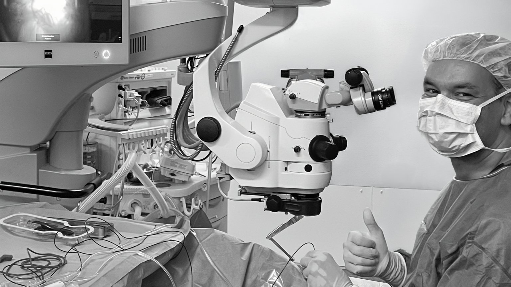
In cijfers
Eigen resultaten van dr. Van Overdam, zes maanden na de eerste operatie. Resultaat hangt mede af van de uitgangssituatie, zoals de uitgebreidheid van de netvliesloslating of de grootte van het maculagat.
Drie kerngebieden
Wat zijn de meest voorkomende aandoeningen, welke signalen zijn er, en wanneer is een operatie nodig?
Lees meerHoe verloopt een vitrectomie, wat kunt u vóór en ná de ingreep verwachten en wat zijn de resultaten?
OperatiesRond de operatieAchtergrond, opleiding en de wetenschappelijke onderwerpen waar ik me op richt.
Lees meerWelkom
Op deze website vindt u toegankelijke uitleg over de meest voorkomende netvliesaandoeningen, over wat een netvliesoperatie inhoudt en wat u vóór en na de ingreep kunt verwachten.
De informatie is zo geschreven dat u zich op uw spreekuur of operatie goed kunt voorbereiden: zonder medisch jargon waar dat niet nodig is, maar wel volledig en open over wat een operatie wel en niet kan bereiken.
Onderscheidende focus
Bij ongeveer 10% van de patiënten met een netvliesloslating komt het netvlies opnieuw los, meestal door littekenvorming op het netvlies (PVR). Een tweede operatie is technisch zwaarder en het zichtherstel daarna is gemiddeld minder goed.
Voorkómen is daarom belangrijker dan herstellen. In ons werk besteden we extra aandacht aan het zo volledig mogelijk verwijderen van het glasvocht, inclusief de cortexlaag (het buitenste laagje van het glasvocht) die soms op het netvlies achterblijft. Zulke glasvochtresten vormen de basis voor littekenweefsel.
Recente inzichten
Hoe herkent u het verschil tussen "rustige" en "alarmsignaal"-floaters, en wanneer moet u dezelfde dag naar de oogarts?
Meestal vijf dagen een vaste houding, zes keer per dag een uur en zo mogelijk ook 's nachts: dat valt zwaar, maar maakt vaak het verschil tussen een geslaagde en mislukte operatie.
Patiëntvriendelijke uitleg over de belangrijkste oorzaak van een tweede operatie, en hoe operatietechniek het risico beïnvloedt.
Overzicht
Een overzicht van de meest voorkomende aandoeningen van het netvlies en glasvocht waar wij dagelijks mee werken: met heldere uitleg over symptomen, oorzaken en behandelopties.
De gel in het oog komt los van het netvlies: meestal onschuldig, soms een aanleiding voor scheurtjes.
Een klein scheurtje in het netvlies, vaak ontstaan na een glasvochtloslating. Met een laserbehandeling is een loslating in de meeste gevallen te voorkomen.
Een spoedaandoening waarbij het netvlies loskomt van de oogwand. Snelle herkenning en behandeling zijn essentieel voor zichtherstel.
Een gaatje in het centrum van het netvlies, dat zorgt voor een vervormde of verdwenen plek midden in het beeld.
Een dun vlies op het netvlies dat tot vervormd zien leidt: niet altijd te opereren, soms juist wel.
Vlekken en draadjes in het zicht. Meestal onschuldig en gewenning treedt vrijwel altijd op; soms zijn ze hardnekkig genoeg om te overwegen ze chirurgisch te verwijderen.
Bloed in het glasvocht zorgt voor plotse vermindering van zicht. Oorzaken variëren van diabetes tot een netvliesscheur.
Schade aan het netvlies door langdurig verhoogde bloedsuikerwaarden. Sluipend in het begin, in vergevorderde vorm vaak chirurgisch.
Proliferatieve vitreoretinopathie: de belangrijkste oorzaak van een tweede operatie na een netvliesloslating.
Aandoening
Een natuurlijk verouderingsproces waarbij het glasvocht loskomt van het netvlies. Meestal volledig onschuldig, maar bij ongeveer 15% van de mensen leidt het tot een scheurtje, en daarom is een controle altijd zinvol.
Het netvlies is de lichtgevoelige binnenlaag van het oog, met in het midden de gele vlek (macula); de ruimte ervoor is gevuld met glasvocht (bekijk het 3D-oog). Bij een achterste glasvochtloslating (AGVL) maakt het glasvocht zich los van het netvlies. Op zichzelf is dat een normaal verouderingsverschijnsel, maar in een klein deel van de gevallen ontstaat tijdens dit proces een scheurtje of loslating van het netvlies.
Met het ouder worden vervloeit het glasvocht geleidelijk. Op een gegeven moment zakt het in elkaar en laat het daarbij los van het netvlies, met hooguit wat lichtflitsen of nieuwe zwevende vlekjes als gevolg. Aan de randen van het oog (de zogeheten glasvochtbasis) blijft het glasvocht altijd vastzitten. Juist daar concentreert de trekkracht zich, en daar kan een netvliesscheurtje ontstaan op het moment dat het glasvocht loslaat.
Een AGVL is een leeftijdsgebonden proces dat in beide ogen optreedt. Wanneer het één oog overkomt, volgt het andere oog meestal binnen enkele jaren. Dat is op zichzelf geen reden voor zorg, maar wel om bij nieuwe klachten aan het tweede oog opnieuw alert te zijn op de signalen.
Bepaalde factoren maken het proces eerder of heftiger: bijziendheid (myopie; bij bijziende ogen treedt een AGVL gemiddeld vijf tot tien jaar eerder op), een eerdere staaroperatie, een eerder oogletsel of diabetische bloedvatschade. Bij deze groepen is een oogcontrole bij nieuwe klachten extra belangrijk.
Deze klachten zijn op zichzelf onschuldig en nemen meestal in de weken erna geleidelijk af. Het glasvocht hecht zich niet opnieuw vast, maar het zenuwstelsel went aan de aanwezigheid van de schaduwen, waardoor ze minder opvallen.
Op het moment dat het glasvocht loskomt, kan het ook trekken aan kwetsbare plekken van het netvlies en daar een scheurtje veroorzaken. Een onbehandeld scheurtje kan zich ontwikkelen tot een netvliesloslating. Bel daarom bij plotse nieuwe floaters of lichtflitsen dezelfde dag uw oogarts.
Alarmsignalen die acute zorg vragen:
Flitsen of oogmigraine? Flitsen door het glasvocht zijn kort, zitten aan de zijkant van het beeld, in één oog, en vallen vooral op in het donker of als u uw oog beweegt. Oogmigraine geeft flikkerende zigzaglijnen of een flikkerende vlek, duurt meestal 5 tot 60 minuten, blijft zichtbaar als u één oog dichtdoet en wordt vaak gevolgd door hoofdpijn. Oogmigraine is niet schadelijk voor het oog.
Bij de oogarts wordt na pupilverwijdende druppels het netvlies in zijn geheel onderzocht, om eventuele scheurtjes uit te sluiten. Daarbij maakt uw oogarts vaak ook een OCT-scan (een gedetailleerde dwarsdoorsnede van het netvlies en het glasvocht) om de mate van loslating en eventuele tractie (trekkracht) op de gele vlek (macula) te beoordelen. Wanneer er een scheurtje wordt gevonden zonder loslating, kan dit vaak poliklinisch met een laser worden gehecht: een korte ingreep van 10 tot 20 minuten, die de kans op een latere loslating sterk verkleint. Bij een scheurtje met al zichtbare loslating volgt een operatie.
Een achterste glasvochtloslating zelf wordt niet behandeld: het is een natuurlijk verouderingsproces dat vanzelf verloopt. Maar omdat er in dit proces een netvliesscheurtje kan ontstaan, is bij nieuwe klachten een oogcontrole op dezelfde dag essentieel. Wordt een scheurtje gevonden, dan behandelt uw oogarts dat preventief met laser. Lukt dat niet, of is er al een netvliesloslating ontstaan, dan volgt een operatie. Blijft u na de glasvochtloslating last houden van vlekken, dan kan in een aparte afweging een glasvochtoperatie worden overwogen: daarover leest u meer onder glasvochttroebelingen.
Behandeling in het kort
Meestal geen ingreep: een AGVL is een natuurlijk proces. Wordt er bij onderzoek een netvliesscheurtje gevonden, dan behandelt uw oogarts dat preventief met laser.
Bij ongeveer 85% van de patiënten verloopt het proces zonder complicaties. Een tijdig gelaserd scheurtje voorkomt in meer dan 95% van de gevallen een netvliesloslating.
Zeldzaam, mits tijdig onderzocht. De uitschieter is dat een scheurtje doorgroeit tot een netvliesloslating vóórdat het gevonden wordt; daarom is snel onderzoek bij nieuwe klachten essentieel.
Cijfers uit recente internationale literatuur (zie referenties onderaan).
Een acute achterste glasvochtloslating leidt zelden direct tot blijvende schade. In de literatuur wordt bij ongeveer 14 tot 18% van patiënten met een symptomatische AGVL bij het eerste onderzoek een netvliesscheur gevonden. Bij een negatief eerste onderzoek ontwikkelt zich in de weken daarna bij ongeveer 2 tot 4% alsnog een scheur: reden voor herevaluatie zodra nieuwe symptomen optreden. De meeste mensen wennen geleidelijk aan resterende vlekjes; het brein leert deze grotendeels weg te filteren.
Cijfers afkomstig uit systematische reviews van Hollands et al. (JAMA 2009) en de AAO Preferred Practice Pattern.
Bel dezelfde dag uw oogarts voor een controle, niet om bezorgd te zijn, maar om er zeker van te zijn dat het netvlies intact is.
Voor verwijzers: verwijsindicatie
Referenties
Aandoening
Een klein scheurtje in het netvlies kan onschuldig blijven of de eerste stap zijn naar een netvliesloslating. Daarom is snelle herkenning belangrijk: vaak volstaat een laserbehandeling van 10 tot 20 minuten om die ontwikkeling te voorkomen.
Het netvlies is de lichtgevoelige binnenlaag van het oog, met in het midden de gele vlek (macula); de ruimte ervoor is gevuld met glasvocht (bekijk het 3D-oog). Bij een netvliesscheurtje ontstaat een opening in de lichtgevoelige laag van het netvlies. Door dat scheurtje kan vocht onder het netvlies komen, wat tot een netvliesloslating kan leiden: een serieuze oogaandoening waarbij snel ingrijpen nodig is.
De meest voorkomende oorzaak is een achterste glasvochtloslating (AGVL). Wanneer het glasvocht in elkaar zakt en loslaat, trekt het soms te krachtig aan een plek waar het sterk aan het netvlies vastzit, waardoor het netvlies inscheurt. Andere oorzaken zijn een trauma aan het oog of een hoge bijziendheid, waarbij de oogbol langer is en het netvlies dunner en kwetsbaarder.
De klachten lijken op die van een achterste glasvochtloslating en zijn niet altijd te onderscheiden:
Niet elk scheurtje geeft klachten. Sommige zijn klein of liggen aan de rand van het netvlies en worden bij toeval ontdekt tijdens een oogonderzoek, bijvoorbeeld bij een controle wegens sterke bijziendheid.
Dit onderscheid is belangrijk voor de afweging: een symptomatisch scheurtje (met acute klachten van flitsen of nieuwe vlekken) heeft een aanzienlijk hoger risico op het ontstaan van een netvliesloslating dan een asymptomatisch scheurtje dat bij toeval is gevonden. De afweging om wel of niet te behandelen wordt daarop afgestemd.
Een scheurtje op zich is geen directe bedreiging voor het zicht. Het wordt dat wel als oogvocht door het scheurtje onder het netvlies komt: dan ontstaat een netvliesloslating, en dat is wel een spoedaandoening. Door een scheurtje preventief vast te zetten, voorkomen we die ontwikkeling in de overgrote meerderheid van de gevallen.
De behandeling is poliklinisch en duurt 10 tot 20 minuten. Eerst wordt de pupil met druppels verwijd en wordt het oog met druppels verdoofd. Vervolgens plaatst de arts een glazen lensje tegen het oog en richt via dat lensje laserstralen rondom het scheurtje: u ervaart de laser als lichtflitsen. Op de plekken van de laser ontstaat een micro-litteken dat het netvlies aan de onderliggende lagen fixeert.
De behandeling kan gevoelig zijn. Wanneer meer pijn wordt verwacht (bijvoorbeeld kort na een eerdere netvliesoperatie) krijgt u in plaats van enkele druppels een klein verdovingsprikje naast het oog. Bij scheurtjes die te uitgebreid of moeilijk bereikbaar zijn voor laser, kiezen we soms voor bevriezen of voor een operatie.
Door het felle laserlicht en de wijde pupil ziet u direct na de behandeling enige tijd minder scherp. Diepte en afstanden zijn moeilijk in te schatten: kom dus niet zelf met de auto. Een begeleider of taxi voor de terugreis is verstandig.
In de uren na de behandeling kunt u kortdurend hoofdpijn of irritatie hebben; paracetamol mag. Houdt de pijn langer dan 24 uur aan, bel dan de kliniek. De eerste week vermijdt u zwaar tillen of zware inspanning, en u beschermt het oog tegen stoten en wrijven. Doorgaans volgt na enkele weken een controleafspraak om te beoordelen of het litteken zich goed heeft gevormd.
De meeste netvliesscheurtjes worden door uw eigen oogarts behandeld: laserbehandeling is in de algemene oogheelkunde een gangbare ingreep. Wij komen pas in beeld bij meer complexe situaties: een scheur die al deels tot een netvliesloslating heeft geleid, scheurtjes die met laser niet veilig bereikbaar zijn, of gevallen waarbij een glasvochtbloeding het zicht op het netvlies blokkeert.
Behandeling in het kort
Laserbehandeling of, in uitzonderingsgevallen, bevriezen. Een poliklinische ingreep van tien tot twintig minuten, onder verdoving met druppels.
Bij een tijdig behandeld symptomatisch scheurtje voorkomt de laser in meer dan 95% een netvliesloslating. Bij asymptomatische scheurtjes wordt zorgvuldig afgewogen wel of niet te behandelen.
Zelden: kortdurende hoofdpijn, lichtgevoeligheid of een irritatie rond het oog na de behandeling. Ernstige complicaties zijn een uitzondering.
Cijfers uit recente internationale literatuur (zie referenties onderaan).
Tijdige behandeling van een symptomatisch netvliesscheurtje met laser of bevriezen voorkomt het ontstaan van een netvliesloslating in meer dan 95% van de gevallen. Onbehandeld ontstaat alsnog een netvliesloslating bij naar schatting 30 tot 50% van deze symptomatische scheurtjes, afhankelijk van locatie, grootte en bijkomende risicofactoren zoals lattice-degeneratie (dunnere plekken in het netvlies, waar glasvocht steviger vastzit) of hoge bijziendheid.
Bij asymptomatische scheurtjes (toevallig gevonden, zonder klachten) is de kans op het ontstaan van een netvliesloslating aanzienlijk lager (vaak onder de 5%) en wordt behandeling zorgvuldig afgewogen tegen de zeer kleine maar reële kans op complicaties. De ingreep duurt 10 tot 20 minuten, gebeurt poliklinisch onder verdoving met druppels en geeft zelden complicaties.
Cijfers conform de AAO Preferred Practice Pattern voor posterieure vitreoretinale aandoeningen.
Bij plotse lichtflitsen, een opvallende toename van vlekjes of een schaduw in het zicht: neem dezelfde dag contact op met uw oogarts of de Spoedeisende Hulp. Voor twijfelgevallen of een tweede mening: contact opnemen
Voor verwijzers: verwijsindicatie
Referenties
Aandoening
Een netvliesloslating is een spoedaandoening: het netvlies komt los van de onderliggende oogwand. Zonder snelle behandeling kan een deel van het zicht blijvend verloren gaan. Snelle herkenning en operatie maken in de meeste gevallen goed herstel mogelijk.
Het netvlies is de lichtgevoelige binnenlaag van het oog, met in het midden de gele vlek (macula); de ruimte ervoor is gevuld met glasvocht (bekijk het 3D-oog). Bij een netvliesloslating raakt het netvlies plaatselijk los van de oogwand erachter. Vervloeid glasvocht komt via een scheurtje onder het netvlies terecht, waardoor de loslating zich uitbreidt en het zicht in dat deel van het oog uitvalt. Dit is een spoedaandoening.
Vrijwel altijd begint een loslating met een klein scheurtje in het netvlies, vaak veroorzaakt door een achterste glasvochtloslating (AGVL). Hoe sneller een loslating wordt herkend en geopereerd, des te groter de kans op volledig zichtherstel. Vooral wanneer het centrum van het netvlies (de macula) nog niet is losgekomen, geldt: dezelfde dag of binnen 24 uur naar de oogarts.
Typische signalen zijn:
Bij deze klachten geldt: dezelfde dag (of binnen 24 uur) naar de oogarts. Hoe sneller een loslating wordt behandeld, des te groter de kans op volledig zichtherstel, vooral als de gele vlek (macula) nog niet betrokken is.
In 2016 werden in Nederland ruim 4000 mensen geopereerd aan een netvliesloslating. Sindsdien is dat aantal gestegen, door de vergrijzing en doordat meer mensen bijziend zijn.
Een netvliesloslating kan alleen operatief worden hersteld. Welke techniek het beste past, hangt af van de plek en uitgebreidheid van de loslating, het soort scheurtje en eerdere oogoperaties. De drie meest gebruikte technieken zijn:
Welke techniek we kiezen, bespreken we vooraf met u. Soms blijkt pas tijdens de operatie dat iets anders nodig is, bijvoorbeeld olie in plaats van gas of een extra bandje.
Tot de operatie. Doe rustig aan. Wordt de schaduw groter, of ziet u in het midden ineens slechter? Bel dan direct de kliniek of uw oogarts, ook ’s avonds en ’s nachts.
Hoe het verder gaat, van het eerste consult tot het herstel thuis: Rond de operatie
De eerste dagen ziet u wazig en kan het oog gevoelig zijn. Bij gas- of olievulling krijgt u een houdingsadvies (meestal 5 dagen, 6 keer per dag 1 uur verdeeld over de dag en zo mogelijk ook 's nachts) om de vulling op de juiste plek tegen het netvlies te houden. Volledig herstel van het zicht kan maanden duren. Heeft de gele vlek losgelegen, dan wordt het zicht door de opgetreden schade meestal niet meer zo goed als vóór de loslating, en blijft er vaak wat vervorming. In de loop van het jaar na de operatie kunnen zicht en vervorming nog langzaam verbeteren.
Na een vitrectomie ontstaat meestal binnen enkele maanden tot een jaar staar (vertroebeling van de eigen ooglens); op jonge leeftijd gaat dat vaak minder snel. Daarom combineren we de vitrectomie vaak met een staaroperatie. Staar is geen complicatie maar een verwacht gevolg, en is ook later goed te behandelen met een gewone staaroperatie.
In de internationale literatuur ligt het netvlies bij 85 tot 90% van de patiënten na de eerste operatie weer goed vast (eigen resultaten: meer dan 95%). De belangrijkste oorzaak van terugkeer is littekenvorming op het netvlies (PVR). Was er bij de eerste operatie al littekenvorming, dan laat het netvlies bij ongeveer 25 tot 30% opnieuw los (eigen resultaten: 5 tot 10%); na extra operaties ligt het uiteindelijk bij ongeveer 95% aan (eigen resultaten: meer dan 95%). Het verminderen van die kans is een speerpunt in mijn werk: de operatietechniek wordt zo gekozen dat zoveel mogelijk glasvocht wordt verwijderd, omdat resten een bekende risicofactor zijn voor littekenvorming.
Neem direct contact op met uw oogarts of de Spoedeisende Hulp. Voor planbare zorg of een second opinion: contact opnemen
Behandeling in het kort
Meestal een glasvochtoperatie (vitrectomie) met gas- of olievulling. Soms een uitwendige cerclage met plombe, of een pneumatische retinopexie; de keuze hangt af van de aard van de loslating.
Bij 85 tot 90% van de patiënten (eigen resultaten: meer dan 95%) ligt het netvlies na de eerste operatie weer op zijn plek; met aanvullende ingrepen bij ongeveer 96% (eigen resultaten: meer dan 95%). De uiteindelijke gezichtsscherpte hangt af van of de gele vlek heeft losgelegen en hoe lang.
Staar, meestal binnen enkele maanden tot een jaar na de vitrectomie (later te behandelen met een staaroperatie). Verder: nieuwe loslating, verhoogde oogdruk, beeldvertekening (vooral wanneer ook de gele vlek heeft losgelegen) en littekenvorming, PVR: 5 tot 10% (eigen resultaten: minder dan 5%). Infectie bij ongeveer 0,05% van de operaties (eigen resultaten: minder dan 0,05%). Na een cerclage: bijziender worden, dubbelzien en soms later verwijderen van het bandje.
Cijfers uit recente internationale literatuur (zie referenties onderaan); tussen haakjes de eigen resultaten van dr. Van Overdam.
Voor verwijzers: verwijsindicatie
Referenties
Aandoening
Een maculagat is een klein gaatje in de gele vlek: het centrum van het netvlies dat zorgt voor scherp zien. Het ontstaat doordat het glasvocht aan dit gevoelige punt trekt en is goed te behandelen met een operatie.
Het netvlies is de lichtgevoelige binnenlaag van het oog, met in het midden de gele vlek (macula); de ruimte ervoor is gevuld met glasvocht (bekijk het 3D-oog). Bij een maculagat ontstaat in het centrum van de macula een opening dwars door alle netvlieslagen. Het scherpe centrale zicht wordt daardoor vervormd of valt grotendeels weg, terwijl het zicht aan de rand van het beeld normaal blijft.
De oorzaak ligt vrijwel altijd in trekkracht van het glasvocht op de macula. Bij het ouder worden vervloeit het glasvocht, zakt het op een gegeven moment in elkaar en laat het daarbij los van het netvlies; bij sommige patiënten gebeurt dat niet in één beweging, maar blijft het glasvocht plaatselijk vastzitten op de macula. De aanhoudende trek vormt eerst kleine veranderingen in de structuur en uiteindelijk een volledig maculagat.
Het zicht in het centrum van het beeld wordt vervormd of valt geheel weg, terwijl het zicht aan de randen normaal blijft. Veel patiënten merken het pas duidelijk op door één oog dicht te doen: de hersenen vullen ontbrekende informatie van het ene oog vaak op met dat van het andere. Klassieke signalen zijn:
Ook in het andere oog kan later een maculagat ontstaan: bij 10 tot 15%, vooral als het glasvocht daar nog vastzit. Controleer het andere oog daarom regelmatig met de Amsler-kaart.
De diagnose is meestal direct duidelijk met een OCT-scan, een snelle, pijnloze meting die een dwarsdoorsnede van het netvlies toont. Daarop is het maculagat letterlijk zichtbaar als een onderbreking in de netvlieslagen, en kan ook de grootte ervan worden gemeten: een belangrijke voorspeller voor de operatieuitkomst.
Een maculagat sluit zelden vanzelf: opereren is in de meeste gevallen aangewezen om verder zichtverlies te voorkomen. De timing is wel een keuze. Bij een gezichtsscherpte van 0,4 of hoger telt het uitgangsniveau mee voor het eindresultaat: hoe sneller, hoe beter het resterende zicht. Bij een toevallig ontdekt gat zonder klachten en met goede gezichtsscherpte kan operatie zorgen voor een nuttig reserveoog. Een gat dat al langer dan een jaar bestaat geeft minder zichtherstel, maar wel afname van vervorming. Bij een heel klein gat, of als het glasvocht alleen aan de macula trekt zonder dat er een gat is, kunnen we soms eerst afwachten en na enkele weken een nieuwe scan maken: soms laat het glasvocht vanzelf los. We helpen u bij deze afweging.
De standaardbehandeling is een vitrectomie waarbij het glasvocht wordt verwijderd, het oppervlakkigste laagje van het netvlies (de ILM) wordt rondom het maculagat afgepeld om de aanhoudende trekkracht weg te nemen, en het oog wordt gevuld met een gasbel. De gasbel ligt de eerste dagen tegen de macula en houdt het gat droog, zodat het kan sluiten.
Het houdingsadvies na deze operatie is meestal 5 dagen voorover: 6 keer per dag 1 uur, of 3 keer per dag 2 uur, met de neus naar beneden, zodat de gasbel tegen de achterkant van het oog ligt, daar waar het maculagat zit. Dat is intensief, maar u kunt de uren over de dag verdelen; probeer het zo mogelijk ook 's nachts. Meer over houdingsadvies
Omdat staar (vertroebeling van de eigen ooglens) na een vitrectomie meestal binnen enkele maanden tot een jaar ontstaat, kiezen we vaak voor een gecombineerde operatie: vitrectomie én staaroperatie in dezelfde sessie. Zo voorkomt u een tweede operatie kort daarna. Op jonge leeftijd ontstaat staar vaak minder snel. Staar zelf is geen complicatie maar een verwacht gevolg, en is goed te behandelen met een gewone staaroperatie.
Hoe het verder gaat, van het eerste consult tot het herstel thuis: Rond de operatie
Na de eerste operatie sluit het maculagat bij ongeveer 90 tot 95% van de patiënten (eigen resultaten: meer dan 95%). Het zichtherstel daarna verloopt geleidelijk en kan tot een jaar duren. Door de schade die het gat al heeft aangericht, wordt het zicht meestal niet meer zo goed als vóór het maculagat, en blijft er vaak wat vervorming. In de loop van het jaar na de operatie kunnen zicht en vervorming nog langzaam verbeteren. Hoe groter het gat en hoe langer het al bestaat, hoe minder voorspelbaar het uiteindelijke zichtherstel, wat het belangrijk maakt om bij vermoeden niet te lang te wachten met een verwijzing.
Vraag uw oogarts om een OCT-scan en eventueel verwijzing voor consult. Contact opnemen
Behandeling in het kort
Een vitrectomie waarbij het glasvocht wordt verwijderd, het oppervlakkigste laagje van het netvlies (de ILM) wordt rondom het maculagat afgepeld om de trekkracht weg te nemen, en het oog wordt gevuld met een gasbel. Houdingsadvies: meestal 5 dagen, 6 keer per dag 1 uur of 3 keer per dag 2 uur voorover (neus naar beneden gericht), zo mogelijk ook 's nachts.
Sluiting van het gat na de eerste operatie bij 90 tot 95% van de patiënten (eigen resultaten: meer dan 95%). Het zicht verbetert vaak duidelijk in de weken en maanden erna.
Staar, meestal binnen enkele maanden tot een jaar na de vitrectomie. Zelden hervorming van het gat of een tijdelijk verhoogde oogdruk. Netvliesloslating bij 1 tot 3% (eigen resultaten: minder dan 1%). Infectie bij ongeveer 0,05% van de operaties (eigen resultaten: minder dan 0,05%).
Cijfers uit recente internationale literatuur (zie referenties onderaan); tussen haakjes de eigen resultaten van dr. Van Overdam.
Voor verwijzers: verwijsindicatie
Referenties
Aandoening
Een dun laagje littekenweefsel dat zich op de gele vlek vormt en het netvlies licht kan rimpelen. Niet altijd te opereren, soms juist wel: de afweging is een kwestie van klachten versus operatierisico.
Het netvlies is de lichtgevoelige binnenlaag van het oog, met in het midden de gele vlek (macula); de ruimte ervoor is gevuld met glasvocht (bekijk het 3D-oog). Bij een maculapucker (ook wel epiretinaal membraan genoemd) vormt zich een dun, transparant laagje littekenweefsel over de macula. Dit laagje trekt aan het netvlies en kreukelt het, met vervormd of wazig zien als gevolg.
Het laagje littekenweefsel ontstaat door achtergebleven glasvocht: als het glasvocht loslaat van het netvlies (een achterste glasvochtloslating, AGVL), blijft soms een dun laagje glasvocht op de macula achter. Een pucker kan ook ontstaan na een netvliesoperatie of bij chronische oogontstekingen. Eenmaal aanwezig, krimpt het laagje langzaam en oefent zo trekkracht uit op de onderliggende macula.
Bij milde gevallen blijft het zicht vrijwel normaal en is operatie niet nodig. Bij ongeveer twee derde blijft een pucker in vijf jaar gelijk of wordt hij kleiner. Bij toenemende klachten kan een operatie de vervorming verminderen.
Dit is een belangrijke afweging die per patiënt verschilt. Argumenten voor operatie zijn aanhoudende klachten die het dagelijks functioneren belemmeren, en aanwijzingen op de OCT dat het membraan progressief verandert. Argumenten tegen zijn een nog goede gezichtsscherpte, beperkte klachten en het feit dat een vitrectomie altijd een (beperkt) operatierisico met zich meebrengt.
Ook na een geslaagde operatie blijft een deel van de vervorming meestal bestaan. De operatie is daarmee vooral gericht op stabiliseren en gedeeltelijk verbeteren, niet op volledig herstel.
De ingreep is een vitrectomie waarbij het glasvocht wordt verwijderd en het laagje met een speciaal, fijn pincetje voorzichtig wordt afgepeld. Vaak wordt ook het oppervlakkigste laagje van het netvlies (de ILM) over de gele vlek verwijderd, om de kans op terugkeer te verkleinen: met het verwijderen van dat laagje komt de pucker zelden terug (minder dan 5%), zonder bij ongeveer 20%.
Hoe het verder gaat, van het eerste consult tot het herstel thuis: Rond de operatie
Het herstel verloopt geleidelijk over weken tot maanden. Door de schade die de pucker al heeft aangericht, wordt het zicht meestal niet meer zo goed als vóór de pucker. In de loop van het jaar na de operatie kunnen zicht en vervorming nog langzaam verbeteren. De vervorming wordt meestal duidelijk minder, maar verdwijnt zelden volledig. Na deze operatie is meestal geen houding nodig.
Omdat na een vitrectomie meestal binnen enkele maanden tot een jaar staar (vertroebeling van de eigen ooglens) ontstaat, kiezen we vaak voor een gecombineerde operatie: vitrectomie én staaroperatie in dezelfde sessie. Zo voorkomt u een tweede operatie kort daarna. Op jonge leeftijd ontstaat staar vaak minder snel. Staar zelf is geen complicatie maar een verwacht gevolg, en is goed te behandelen met een gewone staaroperatie.
Een OCT-scan geeft snel uitsluitsel. Een gerichte verwijzing voor operatieadvies is mogelijk. Contact opnemen
Behandeling in het kort
Een vitrectomie waarbij het glasvocht wordt verwijderd en het laagje wordt afgepeld. Vaak wordt ook het oppervlakkigste laagje van het netvlies (de ILM) over de gele vlek verwijderd om de kans op terugkeer te verkleinen.
Bij ongeveer 5% wordt het zicht slechter; bij de anderen blijft het stabiel of wordt het beter. Hoeveel het verbetert, hangt af van de beginsituatie. De beeldvervorming neemt vaak duidelijk af; volledig herstel lukt niet altijd, vooral wanneer de pucker al lang bestaat.
Staar, meestal binnen enkele maanden tot een jaar na de vitrectomie. Zelden ontstaat een nieuw maculagat (<1%) of treedt tijdelijke verhoogde oogdruk op. Vocht in de macula bij ongeveer 5 tot 10%; meestal goed te behandelen met druppels, soms met een injectie. Of de staar tegelijk wordt geopereerd, maakt daarvoor in de grootste studies weinig verschil. Netvliesloslating bij 1 tot 2% (eigen resultaten: minder dan 1%). Infectie bij ongeveer 0,05% van de operaties (eigen resultaten: minder dan 0,05%).
Cijfers uit recente internationale literatuur (zie referenties onderaan); tussen haakjes de eigen resultaten van dr. Van Overdam.
Voor verwijzers: verwijsindicatie
Referenties
Aandoening
Vlekken, draadjes en wolkjes die met u meebewegen wanneer u uw blik verlegt. Meestal onschuldig, maar soms hardnekkig genoeg om er chirurgisch iets aan te overwegen.
Het netvlies is de lichtgevoelige binnenlaag van het oog, met in het midden de gele vlek (macula); de ruimte ervoor is gevuld met glasvocht (bekijk het 3D-oog). Glasvochttroebelingen (vaak 'mouches volantes' of vliegende vliegjes genoemd) zijn schaduwen die u in uw zicht ziet bewegen. Ze worden veroorzaakt door dichte plekken in het overigens heldere glasvocht.
Op jonge leeftijd is het glasvocht volkomen doorzichtig. Met de jaren (en bij sommige aandoeningen ook plotseling) verschijnen er kleine eiwitstrengen, condensaten en celresten. Wat u dan ziet is geen vlek óp uw oog, maar de schaduw van iets dat met uw oogbewegingen meedrijft.
Iedereen heeft ze in meer of mindere mate. Met het ouder worden vervloeit het glasvocht; de dunne vezels die overblijven klonteren samen tot condensaties die schaduwen op het netvlies werpen. Meestal zijn troebelingen onschuldig en went het oog er na verloop van weken tot maanden aan. Een plotselinge toename of grote zwerm vlekken kan echter een teken zijn van een achterste glasvochtloslating of een netvliesscheurtje en verdient dezelfde dag onderzoek.
Patiënten beschrijven het op heel verschillende manieren: mugjes, draadjes, een spinneweb, een wolkje, een vlieg, een haar voor de lens. Allemaal correct. Het glasvocht bevat structuren in alle vormen, en wat u ziet hangt af van wáár in het oog de troebeling zit en hoe het licht erop valt. Troebelingen die dichter bij het netvlies liggen zijn scherper te zien; wat verder naar voren drijft, blijft vager.
Bij verreweg de meeste mensen zijn glasvochttroebelingen op zichzelf geen probleem. Twee dingen helpen mee.
Allereerst zakken de troebelingen na verloop van weken tot maanden vaak naar onderen weg, buiten het centrale gezichtsveld. Het glasvocht wordt geleidelijk vloeibaarder en de deeltjes verspreiden zich.
Ten tweede (en dit is het belangrijkste) leert uw brein de schaduwen weg te filteren. Dat heet neuroadaptatie. U merkt ze nog tegen een witte achtergrond of bij fel licht, maar in de dagelijkse waarneming verdwijnen ze naar de achtergrond.
Plotseling nieuwe floaters (zeker als ze gepaard gaan met lichtflitsen of een gordijn dat van opzij in uw zicht zakt) vragen om een spoedonderzoek diezelfde dag. Dat zijn de tekenen van een achterste glasvochtloslating, en in een minderheid van de gevallen van een netvliesscheur of beginnende loslating.
De pagina die u nu leest gaat over iets anders: glasvochttroebelingen die er al langer zijn, stabiel zijn gebleven, en niet meer met klachten van een dreigende loslating gepaard gaan, maar wél hinderlijk zijn in het dagelijks leven.
Bij een klein deel van de patiënten verdwijnen de troebelingen niet op de achtergrond, en blijven ze het lezen, het werken op een scherm of het autorijden hinderen. Dat is niet hetzelfde als "ik zie ze nog wel eens". Het gaat om mensen die er functioneel last van hebben, die hun beroep niet goed meer kunnen uitoefenen, of die er meerdere keren per dag actief door worden afgeleid.
In die gevallen kan een vitrectomie worden overwogen: een chirurgische ingreep waarbij het glasvocht (en daarmee de troebelingen) uit het oog wordt verwijderd. In de internationale literatuur wordt dit een floater-only vitrectomy (FOV) genoemd. Bij een volledige vitrectomie verdwijnen de troebelingen vrijwel volledig en blijvend. Blijft er een rest glasvocht op het netvlies achter, dan kunnen later weer troebelingen ontstaan als die rest loslaat.
Hoe het verder gaat, van het eerste consult tot het herstel thuis: Rond de operatie
Een vitrectomie is een veilige operatie, maar elke ingreep aan het glasvocht draagt risico's. Na een vitrectomie ontstaat meestal binnen enkele maanden tot een jaar staar (vertroebeling van de eigen ooglens), op jonge leeftijd vaak minder snel. Daarom combineren we de vitrectomie vaak met een staaroperatie; anders verhelpt een staaroperatie de staar later goed. Een netvliesloslating ontstaat bij 1 tot 2% van de patiënten (eigen resultaten: minder dan 1%); een scheurtje dat we tijdens de operatie zien, behandelen we direct met laser. Dat risico is klein, maar reëel, en uitgerekend dít is de aandoening waarvoor we elders juist behandelen. Zeer zeldzaam, bij ongeveer 0,05% van de operaties (eigen resultaten: minder dan 0,05%), maar ernstig is een infectie van het oog (endoftalmitis). Vocht in de macula ontstaat bij 2 tot 5%, en is meestal goed te behandelen.
Leest u nu nog zonder leesbril? Na de staaroperatie (tegelijk of later) kan het oog zelf niet meer scherpstellen op dichtbij, en heeft u voor lezen meestal een bril nodig. Is het netvlies verder gezond, dan is een multifocale kunstlens een mogelijkheid. Neem dit mee in uw afweging.
Voor iemand die verder gezond is en die door floaters daadwerkelijk wordt beperkt, kunnen deze risico's in verhouding aanvaardbaar zijn. Voor iemand die "ze nog wel eens ziet maar er prima mee leeft", weegt het niet op.
YAG-laservitreolyse (waarbij troebelingen met een laser worden 'opgebroken') voer ik zelf niet uit, maar in geselecteerde gevallen verwijs ik door naar een collega die deze behandeling wel aanbiedt. Het effect is aangetoond bij een losse ring van glasvocht (een Weiss-ring) na een glasvochtloslating. Bij jonge patiënten en bij hoge bijziendheid (myopie) kan YAG een overweging zijn om de risico's van een vitrectomie te vermijden: staar op jonge leeftijd en een netvliesloslating bij hoge bijziendheid. Bij verspreide of talrijke troebelingen blijft een vitrectomie echter de enige ingreep met aantoonbaar blijvend resultaat.
Behandeling in het kort
Een vitrectomie waarbij het hele glasvocht (en daarmee de troebelingen) wordt verwijderd. In de internationale literatuur floater-only vitrectomy (FOV) genoemd.
Bij een volledige vitrectomie verdwijnen de troebelingen vrijwel volledig en blijvend; blijft er een rest glasvocht op het netvlies, dan kunnen later nieuwe troebelingen ontstaan. De ingreep volgt in de regel pas wanneer de klachten minstens een half jaar bestaan; gewenning kan namelijk nog optreden.
Staar, meestal binnen enkele maanden tot een jaar, later te behandelen met een staaroperatie. Een netvliesloslating bij 1 tot 2% (eigen resultaten: minder dan 1%). Vocht in de macula bij 2 tot 5%. Zeer zeldzaam: een infectie van het oog, bij ongeveer 0,05% van de operaties (eigen resultaten: minder dan 0,05%).
Cijfers uit recente internationale literatuur (zie referenties onderaan); tussen haakjes de eigen resultaten van dr. Van Overdam.
Voor verwijzers: verwijsindicatie
Referenties
Aandoening
Bloed in het glasvocht zorgt voor een plotse, vaak forse afname van het zicht. De oorzaak (variërend van diabetische retinopathie tot een netvliesscheurtje) bepaalt de behandeling.
Het netvlies is de lichtgevoelige binnenlaag van het oog, met in het midden de gele vlek (macula); de ruimte ervoor is gevuld met glasvocht (bekijk het 3D-oog). Bij een glasvochtbloeding zit er bloed in het glasvocht, waardoor het zicht plotseling wazig of donker wordt, soms tot bijna geen zicht meer. De bloeding zelf is niet pijnlijk, maar de oorzaak is bijna altijd serieus.
De meest voorkomende oorzaken zijn een achterste glasvochtloslating (AGVL) waarbij een netvliesvaatje scheurt, een onderliggend netvliesscheurtje of -loslating, en proliferatieve diabetische retinopathie of een afgesloten ader van het netvlies, waarbij nieuw gevormde, kwetsbare bloedvaten breken. Soms is een trauma de aanleiding, of natte maculadegeneratie. Onderzoek bij plotse troebeling van het zicht is altijd nodig om de bron te bepalen: bij een dichte bloeding door een glasvochtloslating vinden we in 50 tot 70% een netvliesscheurtje.
Een glasvochtbloeding wordt vaak ervaren als een rode of donkere "wolk" door het zicht, of als een plotse, gerimpelde grijze waas. Soms ziet u alleen vlekjes en strepen die op floaters lijken maar veel meer in aantal en donkerder zijn. In ernstige gevallen valt het zicht aan één oog vrijwel volledig weg, terwijl licht en donker meestal nog wel te onderscheiden zijn.
Bij een plotse troebeling van het zicht (een rode of donkere waas, een grijze sluier, of veel nieuwe vlekken tegelijk) is dezelfde dag onderzoek nodig. De bloeding zelf is niet pijnlijk, maar de oorzaak ervan is bijna altijd serieus en vraagt om snelle beoordeling. Bij een dichte bloeding waardoor het netvlies niet goed is te beoordelen wordt vaak een echo-onderzoek (B-scan) gedaan om een eventuele onderliggende netvliesscheur of -loslating uit te sluiten.
Niet elke glasvochtbloeding wordt direct geopereerd. Een verse bloeding zonder duidelijke oorzaak kan in sommige gevallen vanzelf opklaren; afwachten is dan een goede eerste stap. Is een achterste glasvochtloslating de vermoedelijke oorzaak, dan hangt het ervan af of we het netvlies door het bloed heen goed kunnen beoordelen. Lukt dat niet, dan opereren we op korte termijn. Een dichte glasvochtbloeding wijst sterk op een onderliggend netvliesscheurtje (bij 50 tot 70% van deze patiënten wordt er één gevonden) dat zonder behandeling tot een netvliesloslating kan leiden. Een vitrectomie ruimt het bloed op, en eventuele scheurtjes behandelen we in dezelfde sessie. Is het netvlies wel voldoende te beoordelen, dan kunnen we ook even afwachten, met controles. Slaap in die periode met het hoofd hoog. Bij diabetische retinopathie of een afgesloten ader van het netvlies is er minder haast; de keuze hangt dan af van het beloop, de impact op uw dagelijks leven en de toestand van het andere oog. Bij diabetes kunnen we, als er weinig littekenweefsel is, soms eerst injecties in het oog geven: na twee jaar zien mensen dan ongeveer even goed als na een directe operatie. Met een operatie gaat het herstel wel sneller, en een derde van de mensen die eerst injecties kregen, had later toch een operatie nodig. We bespreken de voor- en nadelen met u en helpen bij de keuze.
Of een bloeding vanzelf opklaart, hangt af van de oorzaak. Ligt het netvlies goed, dan wachten we vaak eerst af. Een vitrectomie is nodig als het bloed niet opklaart, of als er een onderliggende aandoening is die behandeld moet worden, zoals een netvliesscheur, diabetische retinopathie of een netvliesloslating. Bij de operatie wordt het bloed verwijderd, de oorzaak behandeld en het oog gevuld met heldere vloeistof, gas of olie afhankelijk van de bevinding.
Laat uw oog altijd snel onderzoeken: bel dezelfde dag uw oogarts of de Spoedeisende Hulp.
Hoe het verder gaat, van het eerste consult tot het herstel thuis: Rond de operatie
Behandeling in het kort
Afhankelijk van de oorzaak. Vaak wordt eerst de onderliggende aandoening behandeld: laser bij een netvliesscheurtje, panretinale laser of anti-VEGF-injectie bij diabetes. Klaart de bloeding niet vanzelf op, of is er sprake van een netvliesloslating, dan volgt een vitrectomie.
Bij een vitrectomie wordt de bloeding vrijwel altijd opgelost. De uiteindelijke gezichtsscherpte hangt sterk af van de onderliggende aandoening en eventuele schade aan het netvlies.
Een nieuwe bloeding (vooral bij diabetische retinopathie), staarvorming na vitrectomie, soms verhoogde oogdruk. Infectie bij ongeveer 0,05% van de operaties (eigen resultaten: minder dan 0,05%). Bij onderliggende netvliesproblematiek gelden de risico's daarvan ook.
Cijfers uit recente internationale literatuur (zie referenties onderaan).
Voor verwijzers: verwijsindicatie
Referenties
Aandoening
Schade aan het netvlies door langdurig verhoogde bloedsuikerwaarden: een aandoening die jarenlang sluipend kan verlopen, en waarbij wij meestal pas in beeld komen wanneer een operatie nodig is.
Het netvlies is de lichtgevoelige binnenlaag van het oog, met in het midden de gele vlek (macula); de ruimte ervoor is gevuld met glasvocht (bekijk het 3D-oog). Bij diabetische retinopathie raken de kleine bloedvaten van het netvlies beschadigd door langdurig verhoogde bloedsuikers. In een vroeg stadium geeft het meestal nog geen klachten, terwijl er al beginnende schade is; daarom is regelmatige oogcontrole bij diabetes belangrijk.
In de loop van jaren ontstaan microbloedinkjes en lekkage van vocht uit de vaatwanden. In een gevorderd stadium gaan vaten dichtzitten, en vormt het netvlies als reactie nieuwe (zwakke) bloedvaten (proliferatieve diabetische retinopathie). Die kunnen scheuren en zorgen voor glasvochtbloedingen, of door littekenvorming uiteindelijk voor een netvliesloslating.
Diabetische retinopathie verloopt in grote lijnen in twee stadia.
In het niet-proliferatieve stadium (NPDR) zijn de afwijkingen subtiel: kleine bloedinkjes, vetafzettingen ('exsudaten') en kleine vaatuitstulpingen. De patiënt merkt vaak niets: de oogarts vindt deze veranderingen bij periodieke screening. Behandeling is in deze fase meestal niet nodig; wel een goede regeling van bloedsuiker en bloeddruk, en regelmatige controle.
In het proliferatieve stadium (PDR) ontstaan nieuwe, broze bloedvaatjes op of rond het netvlies. Deze kunnen plotseling bloeden, met als gevolg een glasvochtbloeding. Ze kunnen ook littekenweefsel vormen dat aan het netvlies trekt: een netvliesloslating door trekkracht van littekenweefsel, een specifieke vorm die anders verloopt dan de gewone scheurtjes-variant.
Daarnaast kan ongeacht het stadium diabetisch maculaoedeem (DMO) ontstaan: vochtopstapeling in de gele vlek (macula), met geleidelijk wazig zicht in het centrum.
Het tegendraadse aan diabetische retinopathie: in de fase waarin de behandeling het beste werkt, voelt u doorgaans helemaal niets. Het oog kan al fors aangetast zijn voordat het zicht merkbaar afneemt. Pas wanneer er een glasvochtbloeding optreedt (en u plotseling een rode mist of grote zwarte vlek ziet) of wanneer maculaoedeem het centrale zicht aantast, wordt u zich er direct van bewust.
Daarom is regelmatige oogheelkundige screening voor mensen met diabetes geen overdaad maar standaardzorg. Hoe vaak, hangt af van de uitslag van de vorige controle (richtlijn Diabetische retinopathie):
Soms is het anders, bijvoorbeeld bij een zwangerschap. Uw arts of oogarts zegt wat voor u geldt.
Behandeling van diabetische retinopathie verloopt in een opbouwende ladder.
Bloedsuikercontrole is de basis. Strikte regulatie vertraagt de ontwikkeling aanzienlijk en kan in vroege stadia zelfs voor enige verbetering zorgen. Dit is huisarts- en internistenwerk, maar wel het fundament van alle ooghulp die daarop volgt.
Lasertherapie (panretinale fotocoagulatie) wordt ingezet bij proliferatieve vormen. De randen van het netvlies worden met een laser behandeld, waardoor de drijfveer voor de nieuwvorming wegvalt. U ziet daarna in het donker en aan de zijkant iets minder, maar de behandeling is bewezen effectief om blindheid te voorkomen.
Anti-VEGF-injecties (medicijnen die nieuwe bloedvaatjes en lekkage remmen, zoals ranibizumab, aflibercept, bevacizumab) vormen tegenwoordig de standaardbehandeling voor diabetisch maculaoedeem en zijn in toenemende mate ook een alternatief voor laser bij proliferatieve vormen. Deze injecties worden door de oogarts gegeven die u doorgaans al kent.
Een vitrectomie komt aan de orde wanneer de eerdere stappen tekortschieten. De drie hoofdindicaties zijn:
Op dat punt komt onze rol in beeld. Bij een bloeding kunnen we soms eerst injecties geven in plaats van direct te opereren: na twee jaar is het zicht dan ongeveer even goed, al gaat het herstel met een operatie sneller.
Een vitrectomie bij gevorderde diabetische retinopathie is een complexe operatie. We verwijderen het glasvocht inclusief de bloeding, maar belangrijker nog: we verwijderen voorzichtig het littekenweefsel met daarin gegroeide bloedvaatjes dat het netvlies aan de oogwand vasttrekt. Dat is microchirurgisch werk waarbij we millimeter-voor-millimeter het littekenweefsel losmaken zonder het netvlies te scheuren. Vaak is aanvullende laserbehandeling tijdens dezelfde ingreep nodig. Een injectie met anti-VEGF enkele dagen vóór de operatie maakt de nieuwe vaatjes rustiger: de kans op een nabloeding na de operatie daalt dan van ongeveer 30% naar ongeveer 10%. Is er al veel littekenweefsel, dan kan een injectie dat weefsel juist laten samentrekken, waardoor het netvlies verder wordt losgetrokken. Dat gebeurt meestal binnen enkele dagen tot weken. Daarom geven we de injectie dan kort voor de operatie, en kiezen we bij veel littekenweefsel niet voor alleen injecties.
De operatie duurt vaak langer dan een 'gewone' vitrectomie, soms meer dan twee uur, en vereist na afloop standaardnazorg met houdingsadvies en oogdruppels. Het herstel van het zicht hangt sterk af van de toestand van het netvlies vóór de operatie. Wanneer de macula al langere tijd schade had, blijft die schade vaak bestaan; wel kunnen we verdere verslechtering meestal voorkomen.
Operatie aan een diabetisch oog brengt iets meer risico's mee dan vitrectomieën om andere redenen: het netvlies is fragieler en de heling verloopt trager. Dat betekent niet dat de operatie te risicovol is; wel dat goede patiëntselectie en realistische verwachtingen essentieel zijn.
Hoe het verder gaat, van het eerste consult tot het herstel thuis: Rond de operatie
Diabetische retinopathie is bij uitstek een aandoening waar samenwerking telt. De internist regelt de bloedsuiker, de algemeen oogarts of medisch retina-specialist doet de monitoring en de injecties, en wij komen in beeld op het moment dat chirurgie nodig is. We werken nauw samen met verwijzers en zorgen dat de informatie tussen behandelaars stroomt, zodat u uw verhaal niet steeds opnieuw hoeft te doen en de keuzes niet eenzijdig worden genomen.
Behandeling in het kort
Een ladder van behandelingen, afhankelijk van het stadium: anti-VEGF-injecties bij maculaoedeem of beginnende proliferatieve vormen, panretinale laser bij uitgebreidere afwijkingen, en een vitrectomie bij blijvende bloedingen, trekkracht of dreigende loslating.
Tijdige behandeling kan zichtverlies bij de meeste patiënten voorkomen of beperken. Na een diabetes-vitrectomie hangt de uitkomst sterk af van de uitgangssituatie.
Een nieuwe bloeding, hernieuwde trekkracht of littekenvorming, staarvorming na vitrectomie. Infectie bij ongeveer 0,05% van de operaties (eigen resultaten: minder dan 0,05%). Bij gevorderde diabetes blijft langdurige nazorg essentieel: in nauwe samenwerking met uw oogarts en internist.
Cijfers uit recente internationale literatuur (zie referenties onderaan).
Voor verwijzers: verwijsindicatie
Referenties
Aandoening
Deze littekenvorming is de belangrijkste reden waarom een netvliesloslating na een geslaagde operatie soms terugkeert. De ontwikkeling ervan is voor een deel te beïnvloeden door de operatietechniek: een speerpunt in mijn werk.
Het netvlies is de lichtgevoelige binnenlaag van het oog, met in het midden de gele vlek (macula); de ruimte ervoor is gevuld met glasvocht (bekijk het 3D-oog). Bij PVR (proliferatieve vitreoretinopathie) ontstaat op het netvlies een laagje littekenweefsel dat krimpt en het netvlies vervormt. PVR is de belangrijkste oorzaak van een terugkerende netvliesloslating na een eerdere operatie.
Bij het ontstaan spelen meerdere factoren samen een rol: een ontstekingsreactie in het oog, pigmentcellen die via het scheurtje in het glasvocht terechtkomen, een reactie van het netvlies zelf, en achtergebleven glasvochtresten, die de basis vormen waarop littekenweefsel kan ontstaan. Dat littekenweefsel krimpt vervolgens, vergelijkbaar met littekenvorming elders in het lichaam, en trekt het netvlies opnieuw los. Het zorgvuldig verwijderen van resten van het glasvocht (cortexresten) en pigmentcellen is daarom een kernpunt van de eerste operatie.
PVR is geen "tweede ziekte" maar een complicatie die voortkomt uit het oorspronkelijke probleem: het netvliesscheurtje en de loslating zelf zetten dit proces in gang.
Een tweede operatie aan een oog met PVR is technisch complexer. Het littekenweefsel moet zorgvuldig worden afgepeld zonder het netvlies te beschadigen, en vaak is een langduriger ondersteuning van binnenuit nodig, zoals siliconenolie, die later in een aparte ingreep weer verwijderd moet worden. Het zichtherstel na een geslaagde PVR-operatie is gemiddeld minder goed dan na een eerste operatie.
Geen enkele techniek kan PVR volledig uitsluiten: sommige ogen hebben een biologische aanleg die het ontwikkelen waarschijnlijker maakt. Maar bij de operatietechniek zijn keuzes te maken die de kans aanzienlijk beïnvloeden.
"Met triamcinolon en het zorgvuldig verwijderen (shaven) van de glasvochtbasis ontstaat PVR na 5 tot 10% van de eerste operaties voor een netvliesloslating; als daarbij ook de cortexresten worden verwijderd, in mijn eigen resultaten na minder dan 5%. Minder PVR betekent minder kans op een terugkerende netvliesloslating."
Hoe het verder gaat, van het eerste consult tot het herstel thuis: Rond de operatie
Onze klinische ervaring en onderzoeksbevindingen wijzen erop dat zorgvuldig uitvoeren van bovenstaande stappen het verschil maakt. Een vooraf opgezette studie met vier chirurgen (100 ogen) vond bij 36% van de eerste vitrectomieën cortexresten op het netvlies. Bij ogen met cortexresten liet het netvlies bij 17% opnieuw los, bij ogen zonder cortexresten bij 0%. Het systematisch herkennen en verwijderen ervan is sindsdien een vast onderdeel van onze techniek.
Er is nog geen medicijn dat PVR bewezen voorkomt. Middelen als methotrexaat worden onderzocht, met wisselende resultaten. Een zorgvuldige eerste operatie blijft daarom het belangrijkst.
Voor verwijzers en geïnteresseerde collega's: er is een uitgebreid wetenschappelijk werk over dit onderwerp beschikbaar; zie Onderzoek & publicaties.
Behandeling in het kort
Een uitgebreidere vitrectomie waarbij niet alleen het glasvocht maar ook de cortexresten en de littekenvliezen op het netvlies worden weggepeld. Aan het eind wordt het oog gevuld met siliconenolie of langwerkend gas; olie wordt later in een tweede operatie verwijderd.
Na een operatie voor PVR laat het netvlies bij ongeveer 25 tot 30% opnieuw los (eigen resultaten: 5 tot 10%). Na extra operaties ligt het netvlies uiteindelijk bij ongeveer 95% aan (eigen resultaten: meer dan 95%). Het functionele zicht is wisselend en hangt af van de eerder ontstane schade aan de gele vlek.
Recidief PVR, hypotonie (lage oogdruk), opnieuw losraken van het netvlies, blijvend verminderd zicht. Na een eerste netvliesoperatie ontstaat PVR bij 5 tot 10% (eigen resultaten: minder dan 5%). Infectie bij ongeveer 0,05% van de operaties (eigen resultaten: minder dan 0,05%).
Cijfers uit recente internationale literatuur (zie referenties onderaan); tussen haakjes de eigen resultaten van dr. Van Overdam.
PVR ontstaat na 5 tot 10% van de eerste vitrectomieën voor een netvliesloslating en is daarmee de belangrijkste oorzaak van een terugkeer na de operatie. Na een operatie voor PVR, bij de eerste operatie of na een recidief, laat het netvlies bij ongeveer 25 tot 30% opnieuw los; na extra operaties ligt het uiteindelijk bij ongeveer 95% aan. Het functionele zichtherstel is variabel en gemiddeld minder goed dan na een eerste operatie. Dit onderstreept het belang van de eerste operatie en van een operatietechniek die het PVR-risico zo klein mogelijk houdt.
Voor tweede meningen of bespreking van complexe gevallen is verwijzing welkom. Voor verwijzers
Referenties
Behandeling
Drie kerntechnieken vormen samen vrijwel alle netvliesoperaties: de glasvochtoperatie (vitrectomie), de cerclage of plombe, en pneumatische retinopexie (gasbelbehandeling). Hieronder leest u hoe ze verschillen en wanneer welke wordt gekozen.
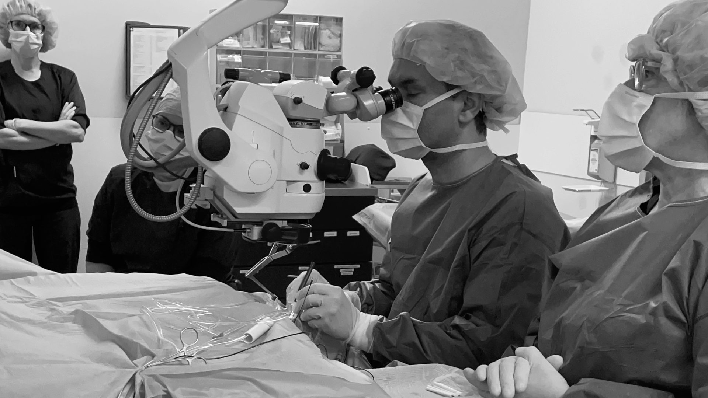
Rond de operatie
Alles op een rijDe meest gebruikte techniek bij netvlies- en glasvochtproblemen. Via drie kleine openingen van minder dan 1 millimeter in de oogwand wordt het glasvocht voorzichtig verwijderd met een fijn micro-instrument dat tegelijk afzuigt en knipt. Daarna kan het netvlies worden behandeld: scheurtjes worden gehecht met laser of bevriezing (cryo), rond een maculagat wordt het binnenste netvlieslaagje afgepeld, een loslating wordt teruggelegd, of bloedingen worden verwijderd.
Aan het einde van de operatie wordt het oog gevuld met heldere vloeistof, een gas-luchtmengsel of siliconenolie, afhankelijk van wat het netvlies nodig heeft. Een gas- of olievulling werkt als interne tampon en houdt het netvlies de eerste dagen of weken op zijn plek.
Bij deze klassieke techniek wordt aan de buitenkant van de oogwand gewerkt. Een siliconen bandje (cerclage) wordt rond het oog gelegd, of een siliconen plombe (buffer) wordt op een specifieke plek bevestigd. De druk van buitenaf zorgt dat het oog op die plek iets indeukt, waardoor een netvliesscheurtje sluit en het netvlies tegen de oogwand komt te liggen.
Bij geselecteerde patiënten met een kleine loslating door één scheurtje, of een paar dicht bij elkaar, boven in het netvlies kan een korte poliklinische ingreep volstaan: een gasbel wordt in het oog gespoten, het scheurtje wordt met laser of bevriezing (cryo) gehecht, en de patiënt houdt enkele dagen het hoofd in een specifieke positie zodat de gasbel het netvlies tegen de oogwand drukt.
De techniek werkt niet voor alle netvliesloslatingen (strenge criteria gelden voor patiëntselectie), maar bij geschikte patiënten kan het een operatie in een grote OK vermijden.
Een vitrectomie versnelt het ontstaan van staar (cataract), al gaat dat op jonge leeftijd vaak minder snel. Daarom wordt bij patiënten die nog hun eigen lens hebben regelmatig direct een gecombineerde operatie uitgevoerd: in dezelfde sessie wordt een staaroperatie en een vitrectomie verricht. Dat scheelt een tweede ingreep een paar maanden later en geeft vaak meteen scherper zicht.
Alles over de voorbereiding, de operatiedag en het herstel
Bel de kliniek waar u wordt geopereerd: Retina Operatiecentrum (088) 111 19 90, Erasmus MC polikliniek Oogheelkunde (010) 704 01 35 (keuze 3).
Referenties
Patiëntentraject
Van het eerste consult tot het herstel thuis: wat u kunt verwachten, wat u zelf kunt doen en wanneer u ons belt.
In vier stappen
Wat u kunt verwachten als u door uw oogarts naar ons bent verwezen, wat we onderzoeken, hoe we de bevindingen bespreken en hoe een eventuele behandeling tot stand komt.
Lees meer № 02Wat u thuis kunt voorbereiden voordat u naar de kliniek komt: van hygiëne en medicatie tot vervoer en wat u op de dag zelf meeneemt.
Lees meer № 03Wat er gebeurt vanaf het moment dat u zich meldt in de kliniek tot u weer naar huis gaat: intakegesprek, verdoving, de operatie zelf en de eerste minuten erna.
Lees meer № 04De eerste dagen, de weken erna en wat u kunt verwachten: met antwoorden op de meest gestelde vragen en de spoednummers voor wanneer er iets niet goed voelt.
Lees meerMeer over het herstel
Na een operatie met gas, lucht of siliconenolie moet u soms een tijd een bepaalde houding aannemen. Hier leest u waarom, welke houding, hoe vaak en hoe lang.
Lees meerSiliconenolie houdt het netvlies op zijn plaats terwijl het vastgroeit. Meestal moet de olie er na enkele maanden weer uit. Hier leest u waarom, wanneer en hoe.
Lees meerMet de Amsler-kaart controleert u thuis zelf het midden van uw netvlies, de macula. Zo merkt u veel veranderingen op tijd.
Lees meerBel direct bij één van deze klachten, ook ’s avonds, ’s nachts en in het weekend. Eén klacht is genoeg: wacht niet af. Bel het spoednummer van de kliniek waar u bent geopereerd.
Dag en nacht bereikbaar: buiten kantoortijden wordt u doorgeschakeld naar de dienstdoende oogarts. Zorg dat uw nummerherkenning aanstaat. Neemt niemand op, probeer het dan na 10 tot 15 minuten opnieuw.
Dag en nacht bereikbaar: vraag naar de dienstdoende oogarts. Voor vragen en operatieplanning: polikliniek Oogheelkunde, (010) 704 01 35 (keuze 3 voor operatieplanning).
Bel de kliniek waar u wordt geopereerd: Retina Operatiecentrum (088) 111 19 90, Erasmus MC polikliniek Oogheelkunde (010) 704 01 35 (keuze 3).
Patiëntentraject
Wat u kunt verwachten als u door uw oogarts naar ons bent verwezen, wat we onderzoeken, hoe we de bevindingen bespreken en hoe een eventuele behandeling tot stand komt.
Een verwijzing voor een glasvocht- of netvliesprobleem is voor de meeste mensen een eerste keer. Hieronder leggen we uit wat u bij ons bezoek te wachten staat: wie u ontmoet, welke onderzoeken horen bij een eerste consult, en hoe u en wij samen tot een beslissing komen over de beste vervolgstap.
De verwijsbrief van uw oogarts (bij het Retina Operatiecentrum ook van uw optometrist) is leidend: deze is doorgaans al digitaal bij ons binnengekomen. Daarnaast helpt het als u meeneemt:
Het bezoek begint niet meteen bij de chirurg. U wordt eerst opgevangen door een optometrist of een technisch oogheelkundig assistent, die de basisonderzoeken doet en de informatie voor het consult voorbereidt.
Anamnese (het gesprek over uw klachten en voorgeschiedenis). We bespreken uw klachten en het verloop ervan, eerdere oogheelkundige behandelingen, andere oogziekten, algemene gezondheid, allergieën en medicatiegebruik. Allergieën voor antibiotica, pleisters, latex en vooral povidonjodium (Betadine, dat standaard wordt gebruikt voor oogdesinfectie) worden actief uitgevraagd.
Oogmetingen. Gezichtsscherpte, oogdruk en de basisstatus van het oog.
Pupilverwijdende druppels. Voor de meeste netvliesonderzoeken is dit nodig om goed achter in het oog te kunnen kijken. De pupillen zijn enkele uren wijd; u ziet daarna wat wazig en bent tijdelijk gevoelig voor licht. U mag daarna niet zelf autorijden: kies voor de terugreis een begeleider, taxi of openbaar vervoer.
Aanvullend onderzoek waar nodig. We maken meestal een OCT-scan van de macula. Bij overweging van een gecombineerde staaroperatie wordt een biometrie verricht: een meting waarmee we de juiste sterkte van een eventuele kunstlens berekenen. Voor een betrouwbare biometrie moet de hoornvliesvorm in zijn natuurlijke staat zijn, dus draagt u contactlenzen, dan moeten die voor de meting uit: harde lenzen minimaal vier weken, zachte lenzen minimaal twee weken. Lukt dat niet vanwege de planning, laat ze dan zo lang mogelijk uit voor het bezoek; dat verbetert de meting al. Bent u ooit aan uw ogen gelaserd om zonder bril te zien? Vertel ons dat, want dat verandert de berekening. Meestal stellen we de kunstlens scherp op veraf; voor lezen heeft u daarna een leesbril nodig.
Reken voor dit onderdeel op 30 tot 60 minuten, soms langer als er extra onderzoek nodig is.
Daarna wordt u opgehaald voor het gesprek. Het oog wordt opnieuw onderzocht, ditmaal met de spleetlamp en (wanneer dat de bevindingen aanvult) met een echo, bijvoorbeeld als het glasvocht troebel is en het netvlies daardoor moeilijk te beoordelen is.
Vervolgens nemen we de bevindingen door:
Als een operatie aan de orde is, leggen we eenduidig vast welk oog geopereerd zou worden, welke ingreep we voorstellen, welke vorm van anesthesie passend is, en (bij een gecombineerde staaroperatie) welke sterkte de kunstlens krijgt, dus of u straks vooral veraf of dichtbij zonder bril wilt zien.
Niet elk consult eindigt met een operatie. Voor sommige aandoeningen is afwachten of observeren een legitieme keuze, zeker als de klachten beperkt zijn of als de risico's van ingrijpen op dit moment niet opwegen tegen de te verwachten winst. Dat bespreken we eerlijk, met de cijfers en risico's die erbij horen.
Soms is de beslissing eenvoudig: bij een verse netvliesloslating bijvoorbeeld, waar snel opereren de uitkomst aanzienlijk verbetert. Vaker is het een afweging waarvoor u tijd nodig heeft. In dat geval plannen we een vervolgafspraak na enkele weken, of bellen we u na een week om uw beslissing door te nemen.
Wanneer u en wij samen besluiten tot een operatie, neemt een patiëntbegeleider het over: uw vaste contactpersoon voor het hele traject. In dit gesprek:
Tijdspad. Bij spoed (bijvoorbeeld een verse netvliesloslating) plannen we vaak nog dezelfde dag of binnen enkele werkdagen. Bij planbare ingrepen ligt de operatie doorgaans binnen enkele weken na uw beslissing.
Voor wat u thuis kunt verwachten op de aanloop naar de operatie, op de operatiedag zelf en in het herstel verwijzen we u graag door naar Voor de operatie, Tijdens de operatie en Na de operatie.
Naast het gesprek met de oogarts beoordeelt een anesthesiemedewerker of de verdoving veilig kan. Meestal gebeurt dat op de operatiedag zelf. Heeft u meer gezondheidsrisico’s, dan gebeurt het in een aparte afspraak vooraf, soms met de anesthesioloog. Daarbij wordt gevraagd naar:
Bloedverdunners hoeft u meestal niet te stoppen. Bij de gebruikelijke verdoving naast het oog is het bloedingsrisico laag. Bloedplaatjesremmers zoals aspirine en de nieuwere bloedverdunners (DOAC’s, zoals apixaban of rivaroxaban) kunt u doorgaans gewoon blijven gebruiken. Gebruikt u Sintrom of Marcoumar, dan mag de INR (de stollingswaarde die de trombosedienst meet) op de operatiedag niet hoger zijn dan 3,5. Twijfelt u, of is er net iets veranderd, overleg dan vóór de operatiedag.
Een tweede mening wordt actief ondersteund, vooral bij planbare beslissingen. Een operatie aan het oog is geen kleine stap, en het kan helpen om een ander perspectief erbij te hebben. Op verzoek leveren we een uitdraai van het dossier en de bevindingen mee, zodat u die kunt voorleggen aan een collega-oogarts elders.
Deze pagina is gebaseerd op de werkwijze van het Retina Operatiecentrum Ede zoals vastgelegd in het interne perioperatieve protocol.
Patiëntentraject
Wat u thuis kunt voorbereiden voordat u naar de kliniek komt: van hygiëne en medicatie tot vervoer en wat u op de dag zelf meeneemt.
Een goede voorbereiding thuis maakt de behandeldag een stuk soepeler: een schone huid rond het oog, een eerlijk overzicht van wat u slikt, en de juiste afspraken over vervoer.
Ga de avond of ochtend voor de behandeling in bad of onder de douche en was uw haren. Dit verlaagt het risico op infectie. Op de behandeldag zelf: geen oogmake-up, gezichtscrème of nagellak. Maak deze zaken de dag ervoor goed schoon.
Na de operatie wordt het oog afgedekt en kunt u zich minder fit voelen. U mag niet zelf aan het verkeer deelnemen (ook fietsen niet) en het is verstandig een begeleider te hebben voor de eerste 24 uur. Regiotaxi of thuiszorg kan eveneens.
U kunt op de operatiedag uw vaste medicijnen gewoon volgens voorschrift innemen, tenzij anders met u afgesproken. Dat geldt ook voor bloedverdunners en oogdruppels. Twee uitzonderingen om alert op te zijn:
Gebruikt u insuline of tabletten voor diabetes? Bij het vooronderzoek hoort u hoe u die op de operatiedag gebruikt. Neem uw bloedsuikermeter mee, en iets te eten voor na de operatie.
Bel de kliniek vooraf als u veel hoest. Pufjes of medicijnen tegen het hoesten neemt u mee.
Een goede nachtrust. Bij plaatselijke verdoving kunt u gewoon ontbijten; bij narcose hoort u hoe lang u nuchter moet zijn. Neem een geldig identiteitsbewijs, uw zorgpas en uw medicijnen in de originele verpakking mee. Schone, makkelijk zittende kleding. Geen sieraden, kettingen, ringen, armbanden, horloges of piercings in het gezicht. Het gehoorapparaat aan de kant van het te opereren oog uit (de andere kant mag u inhouden). Geld en waardevolle bezittingen laat u thuis.
Patiëntentraject
Wat er gebeurt vanaf het moment dat u zich meldt in de kliniek tot u weer naar huis gaat: intakegesprek, verdoving, de operatie zelf en de eerste minuten erna.
U bent in totaal twee tot drie uur bij ons: voor voorbereiding, operatie en nazorg. Hieronder leest u stap voor stap wat er in die tijd gebeurt.
U meldt zich op het afgesproken tijdstip in de kliniek. U wordt opgevangen door iemand van het team dat met u meegaat door de ochtend.
Het intakegesprek vooraf neemt de gezondheidsvragenlijst, toestemmingsverklaring, diagnose, behandelplan en eventuele medicatie met u door. Wanneer er een specifiek houdingsadvies voor na de operatie nodig is, bespreken we dat hier ook.
Voor de operatie krijgt u oogdruppels die de pupil groter maken. Het oog kan daarna nog enkele dagen tot zelfs maanden een grotere pupil hebben dan de andere kant; dat is normaal en herstelt vanzelf.
In de voorbereidingskamer wordt het oog verdoofd: eerst met druppels, daarna een injectie naast het oog. We plaatsen ook een infuusje, waardoor we tijdens de ingreep zo nodig lichte sedatie of pijnstilling kunnen geven. U bent wakker tijdens de operatie en voelt dat we met het oog bezig zijn, maar de verdoving zorgt ervoor dat u geen pijn voelt en meestal niets ziet. Soms ziet u licht, kleuren of vage bewegingen; dat is normaal.
Tijdens de operatie ligt u plat. Uw gezicht wordt afgedekt met een steriele doek waaronder zuurstof wordt geblazen. Belangrijk is dat u zo rustig mogelijk blijft liggen. Geef het aan als u moet hoesten of pijn voelt: dan kunnen we daar iets aan doen. U hoort de geluiden van de apparatuur en kunt ons als operatieteam horen praten. Dat hoort erbij.
Direct na de operatie wordt het oog afgedekt. Soms krijgt u een tablet (Diamox) om de oogdruk te verlagen. U moet daarna vaker plassen; heeft u iets aan uw nieren, zeg dat dan vóór de operatie. U gaat terug naar de wachtkamer voor wat eten en drinken, en krijgt instructies voor de nazorg mee voordat u naar huis gaat.
Patiëntentraject
De eerste dagen, de weken erna en wat u kunt verwachten: met antwoorden op de meest gestelde vragen en de spoednummers voor wanneer er iets niet goed voelt.
De ochtend na de operatie verwijdert u zelf het verband. Maak de oogleden voorzichtig schoon met een schone washand zonder direct contact met het oog. Begin dan met druppelen volgens het schema dat u heeft meegekregen. Niet elke patiënt krijgt druppels; dat verschilt per situatie. Bewaar de druppels op kamertemperatuur. Wanneer een bijsluiter een ander schema vermeldt dan wat u meekreeg, volg dan het advies van uw oogarts.
De eerste twee dagen: hoofd droog houden. Daarna mag u gewoon douchen en uw haren wassen, zonder water of zeep in het oog.
Het oog is kwetsbaarder dan normaal. Niet duwen, niet wrijven. Een (zonne)bril overdag is een goede bescherming tegen onbedoeld stoten. 's Nachts kan een oogkapje voorgeschreven worden; dat krijgt u dan vanuit de kliniek mee.
Wel mag direct: wandelen, op een rustige manier bukken of tillen, en met mate alcohol gebruiken. Naar de tandarts mag ook, maar zolang er gas of lucht in uw oog zit, mag u daar geen lachgas krijgen.
Fietsen kan weer als het zicht niet meer stoort en u gewend bent aan het zien met het geopereerde oog; meestal niet in de eerste week.
Krijgt u van uw kliniek een instructieblad met andere afspraken, volg dan dat blad.
Tot twee weken na de operatie:
Tot vier weken na de operatie:
Autorijden mag pas wanneer de lucht- of gasbel uit het oog verdwenen is. Met alleen siliconenolie in het oog mag u rijden als u goed genoeg ziet volgens de regels van het CBR. Vraag uw oogarts tijdens de nacontrole wat in uw situatie geldt.
Vliegen of duiken is niet toegestaan zolang er gas of lucht in het oog zit: de drukverandering tijdens de vlucht kan het oog ernstig beschadigen. Zit er alleen olie in uw oog en geen gas, dan mag u vliegen.
Geen lachgas zolang er gas of lucht in het oog zit, ook niet bij de tandarts, bij een operatie of bij een bevalling. Lachgas maakt de gasbel snel groter; de druk in het oog kan dan zo hoog worden dat u blind wordt.
Niet plat op de rug liggen zolang er gas, lucht of siliconenolie in het oog zit, tenzij uw oogarts dat voorschrijft. Op de rug drijft de bel naar voren, tegen de lens en de iris. Daardoor kan de oogdruk stijgen en ontstaat sneller staar. Bij zware siliconenolie geeft uw oogarts een eigen advies.
Werkhervatting. De meeste mensen pakken na 1 tot 2 weken het werk weer op, afhankelijk van het werk. Beeldschermwerk kan geen kwaad, maar kan in het begin vermoeiend zijn omdat u nog slechter ziet; begin eventueel met halve dagen. Zwaar lichamelijk werk: na 3 tot 4 weken. Moet u een houding aannemen of zit er gas in uw oog, dan duurt het vaak langer. Stem dit zo nodig af met uw bedrijfsarts.
Of u na de operatie oogdruppels krijgt voorgeschreven hangt af van de locatie en uw situatie. Uw oogarts of de kliniek informeert u hierover direct na de ingreep.
Druppelen: was eerst uw handen. Trek het onderste ooglid iets naar beneden zodat er een gootje ontstaat. Laat één druppel vallen zonder het oog aan te raken. Doe uw oog daarna rustig dicht, ongeveer 1 minuut, zonder te knijpen. Krijgt u meer soorten druppels, wacht dan 5 minuten voor u de volgende druppelt.
Na een netvliesoperatie is een aantal verschijnselen normaal en hoort bij het herstel.
Roodheid van het oog kan zelfs even toenemen voor het wegtrekt, en dat kan weken duren.
Irritatie of een zandkorrelgevoel is gebruikelijk en gaat meestal vanzelf over. In zeldzame gevallen worden hechtingen gebruikt die 2 tot 6 weken kunnen irriteren; daarvoor schrijft de oogarts soms tijdelijk wat zalf voor.
Een wijde pupil aan het geopereerde oog kan maandenlang aanhouden.
Bewegende zwarte stipjes zijn restanten van een medicijn dat we tijdens de operatie gebruiken om het glasvocht beter zichtbaar te maken. Deze verdwijnen geleidelijk in de loop van enkele weken tot zes weken. Vaak vallen ze pas op zodra de gasbel of luchtbel deels is verdwenen.
Verminderd zicht is direct na de operatie soms ingrijpend: soms ziet u alleen licht en donker. Met een gas- of luchtbel ziet u weken slecht en is kijken vermoeiend. Volledig zichtherstel kan tot een jaar duren, met de meeste vooruitgang in de eerste drie maanden.
Dubbelzien komt regelmatig voor en is meestal tijdelijk. Houdt het langer dan zes weken aan, bespreek het dan met de oogarts.
Een verdoofd voorhoofd kan tot enkele dagen na de operatie aanvoelen: gevoel komt vanzelf terug. Door de verdoving (en de gasbel) kan het geopereerde oog ook moeilijk open en kan het scheel staan; dit trekt doorgaans binnen enkele dagen bij.
Bril aanpassen: laat pas na 2 tot 3 maanden een nieuwe bril maken; uw oogsterkte verandert in de eerste tijd nog.
Beeldvervorming kan blijven bestaan als de macula vóór de operatie al was aangedaan: bij netvliesloslating, maculapucker of maculagat. Tot een jaar na de operatie kan dit nog langzaam verbeteren. Met de Amsler-kaart volgt u dit thuis zelf.
Vocht in de macula hoopt zich soms op na de operatie. U ziet dan wazig of vervormd. Dit is meestal goed te behandelen met druppels of een injectie.
Oogdruk later laten meten. Na een vitrectomie is de kans op glaucoom later iets groter. Laat daarom elke 1 tot 2 jaar uw oogdruk meten bij een oogarts of optometrist.
Gas en lucht verdwijnen vanzelf:
U ziet de bel als een schommelende, donkere rand die langzaam zakt. Het gezichtsveld bóven de bel wordt geleidelijk helder en groter.
Olie wordt niet door het lichaam opgenomen en wordt meestal na enkele maanden in een tweede ingreep verwijderd. Heel zelden blijft olie blijvend in het oog. Soms zijn na verwijdering nog kleine oliebelletjes zichtbaar bij verandering van houding. Na het verwijderen van de olie laat het netvlies bij ongeveer 13% van de patiënten opnieuw los (eigen resultaten: minder dan 5%). Lees meer bij Siliconenolie verwijderen.
Hoofdpijn met misselijkheid kan wijzen op een sterk verhoogde oogdruk en is geen normaal beloop. Ziet u boven de gasbel een nieuwe donkere vlek of schaduw, dan kan het netvlies opnieuw loslaten. Bel in beide gevallen direct.
Hoe lang ben ik in de kliniek?
Reken op twee tot drie uur in totaal: voor voorbereiding, operatie en nazorg.
Krijg ik narcose?
In de meeste gevallen plaatselijke verdoving: eerst druppels, daarna een injectie naast het oog. U bent wakker en voelt dat we met het oog bezig zijn, maar u voelt geen pijn en ziet meestal niets. Bij het Retina Operatiecentrum (Ede) is op dinsdag één operatie onder narcose gepland; de overige ingrepen vinden ook daar lokaal plaats. Bij het Erasmus MC is narcose mogelijk bij langdurige ingrepen of wanneer lokale verdoving om medische redenen niet wenselijk is. Uw oogarts bespreekt dit vooraf met u.
Mag ik mijn medicijnen blijven innemen?
Ja, vrijwel alle medicijnen mogen op de dag van de operatie volgens voorschrift gebruikt worden. Bij specifieke bloedverdunners (Sintrom, Marcoumar) zijn er extra afspraken; die staan beschreven onder Voor de operatie.
Wanneer mag ik weer aan het werk?
Meestal na 1 tot 2 weken, afhankelijk van het werk. Beeldschermwerk kan geen kwaad, maar is in het begin vermoeiend. Zwaar lichamelijk werk na 3 tot 4 weken. Stem dit zo nodig af met uw bedrijfsarts.
Wanneer mag ik weer autorijden?
Pas als de gas- of luchtbel uit het oog verdwenen is; met alleen olie als u goed genoeg ziet volgens de regels van het CBR. Uw oogarts laat het u weten tijdens de nacontrole.
Mag ik vliegen na de operatie?
Niet zolang er gas of lucht in het oog zit: de drukverandering tijdens de vlucht kan het oog ernstig beschadigen. Naar grote hoogtes reizen of duiken is om dezelfde reden uitgesloten. Met alleen siliconenolie in het oog mag u wel vliegen.
Hoe lang duurt het voordat ik weer goed zie?
Het herstel verloopt in weken tot maanden. De grootste vooruitgang zit in de eerste drie maanden, met doorgaande verbetering tot een jaar na de operatie. Was de macula vóór de operatie al aangedaan (bij maculagat, pucker of een macula-loslating), dan blijft enige beeldvervorming meestal bestaan.
Waarom kan ik niet langdurig onder controle blijven bij dezelfde chirurg?
Het Retina Operatiecentrum is een landelijk specialistisch dagbehandelingscentrum voor glasvocht- en netvlieschirurgie. We houden capaciteit vrij voor (semi-)acute netvliesproblemen, daarom worden patiënten na 2 tot 3 controles teruggezonden naar hun verwijzend oogarts. Bij langdurig gas of olie in het oog blijven we wel langer betrokken.
Wat doe ik bij pijn na de operatie?
4× per dag 1000 mg paracetamol gedurende 24 uur; 3× 1000 mg als u boven de zeventig bent of bekend met leverziekte. Eventueel daarbij 3× per dag 400 mg ibuprofen, gedurende 2 dagen (niet bij maagklachten, nierproblemen of als u bloedverdunners gebruikt).
Houdt de pijn aan, of wordt het erger, bel dan de spoedlijn.
Na de operatie vinden er twee tot drie nacontroles plaats. Daarna wordt u terugverwezen naar uw verwijzend oogarts voor verdere begeleiding. Bij gebruik van langdurig gas of olie kan de controlefase langer zijn.
Bel direct bij één van deze klachten, ook ’s avonds, ’s nachts en in het weekend. Eén klacht is genoeg: wacht niet af. Bel het spoednummer van de kliniek waar u bent geopereerd.
Dag en nacht bereikbaar: buiten kantoortijden wordt u doorgeschakeld naar de dienstdoende oogarts. Zorg dat uw nummerherkenning aanstaat. Neemt niemand op, probeer het dan na 10 tot 15 minuten opnieuw.
Dag en nacht bereikbaar: vraag naar de dienstdoende oogarts. Voor vragen en operatieplanning: polikliniek Oogheelkunde, (010) 704 01 35 (keuze 3 voor operatieplanning).
Deze pagina is gebaseerd op de patiëntinformatie van het Retina Operatiecentrum (versie juni 2024) en is in november 2026 bijgewerkt. Voor de officiële folder en aanvullende informatie van ROC: eyescan.nl/retina-oc.
Patiëntentraject
Na een operatie met gas, lucht of siliconenolie moet u soms een tijd een bepaalde houding aannemen. Hier leest u waarom, welke houding, hoe vaak en hoe lang.
Gas, lucht en olie drijven in uw oog naar het hoogste punt, net als een luchtbel in water. Daar ligt de bel tegen het netvlies en sluit het scheurtje of gaatje af. Er komt dan geen vocht meer onder het netvlies, zodat het netvlies kan vastgroeien.
Met uw houding zorgt u dat de bel op de goede plek ligt. Bij een maculagat kijkt u bijvoorbeeld naar de grond: dan ligt de bel tegen de macula, het midden van het netvlies. Houd uw houding daarom goed vol.
Wat u van de gasbel ziet en hoe lang het gas in uw oog blijft, leest u bij Na de operatie.
Op uw instructieblad staat hoe vaak en hoe lang. Dat hangt af van uw aandoening en van de oogarts die u opereert. Bij een maculagat is het meestal vijf dagen, zes keer per dag een uur of drie keer per dag twee uur naar de grond kijken, verdeeld over de dag en zo mogelijk ook 's nachts.
U kijkt naar de grond, met uw gezicht recht naar de vloer gericht.
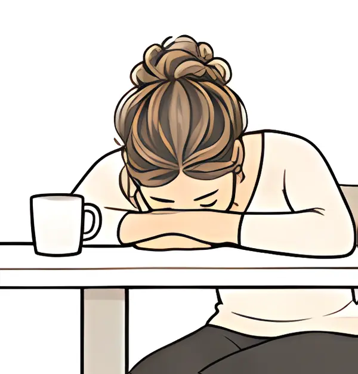
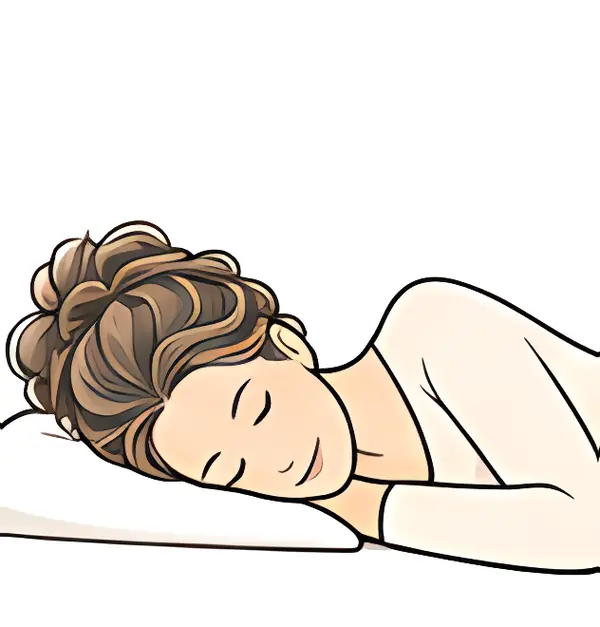
U ligt op de zij die op uw instructieblad staat, met uw hoofd plat op één kussen. Uw gezicht is naar de zijkant gedraaid, niet naar het plafond.
Staat op uw instructieblad zijligging hoog? Leg uw hoofd dan hoger, op twee of drie kussens.
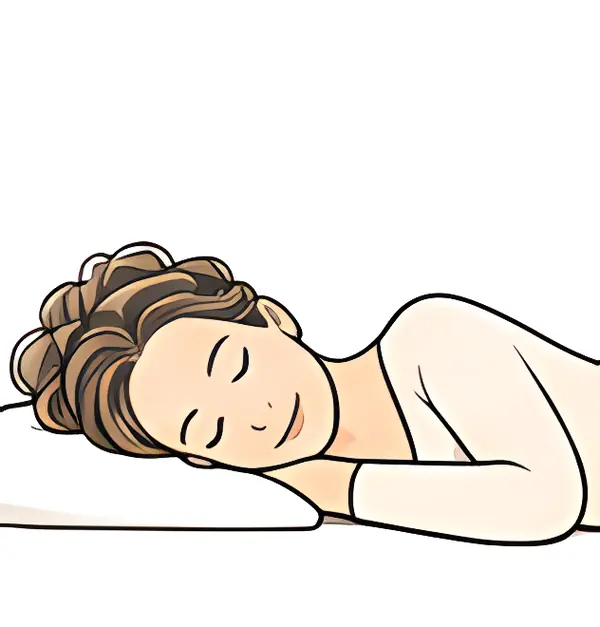
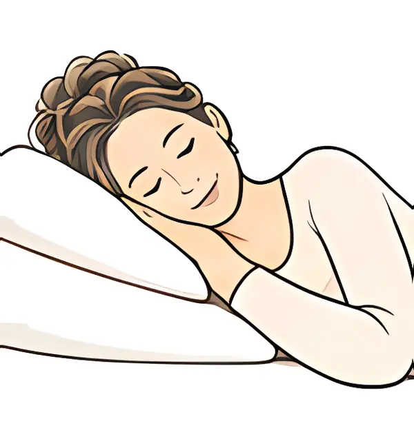
Soms schrijft uw oogarts voor dat u op uw rug ligt. Doe dit alleen als het op uw instructieblad staat. Bij rugligging plat ligt uw hoofd op één plat kussen en wijst uw neus naar het plafond. Bij rugligging hoog liggen uw hoofd en schouders hoger, op meerdere kussens.
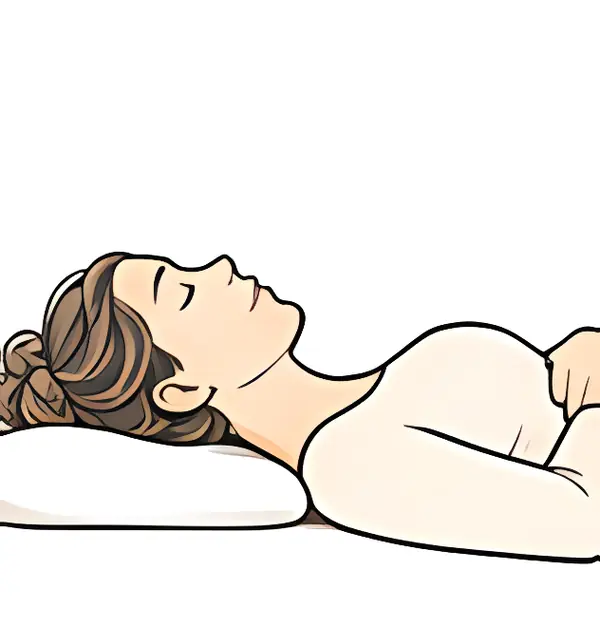
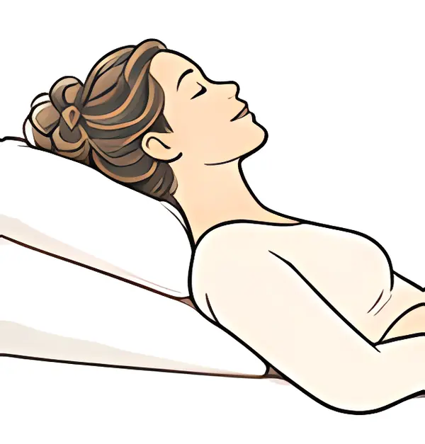
U zit of staat rechtop en houdt uw hoofd recht. U slaapt half zittend, met extra kussens in uw rug. Lig niet plat.
Soms is geen houding nodig. Lig dan in elk geval niet plat op uw rug. Op uw rug drijft de bel naar voren, tegen de lens en de iris (het gekleurde deel van uw oog). Daardoor kan de oogdruk stijgen en ontstaat sneller staar.
Zware olie zakt juist naar beneden in uw oog. U krijgt dan een eigen houdingsadvies van uw oogarts.
Lukt het niet om de houding vol te houden? Bel de kliniek waar u bent geopereerd. Stop niet zelf.
Voor de houding voorover bestaat een treursteun: een steun waarop u voorover kunt zitten of liggen, met een opening voor uw gezicht. U kunt dan makkelijker ademen, lezen en eten. Een treursteun is niet verplicht. U huurt hem zelf; de zorgverzekeraar vergoedt dit meestal niet. Bestel op tijd en geef de datum van uw operatie door. Een stapel stevige kussens op tafel werkt ook.
Meer achtergrond leest u in Houdingsadvies na een netvliesoperatie.
Bel direct bij één van deze klachten, ook ’s avonds, ’s nachts en in het weekend. Eén klacht is genoeg: wacht niet af. Bel het spoednummer van de kliniek waar u bent geopereerd.
Dag en nacht bereikbaar: buiten kantoortijden wordt u doorgeschakeld naar de dienstdoende oogarts. Zorg dat uw nummerherkenning aanstaat. Neemt niemand op, probeer het dan na 10 tot 15 minuten opnieuw.
Dag en nacht bereikbaar: vraag naar de dienstdoende oogarts. Voor vragen en operatieplanning: polikliniek Oogheelkunde, (010) 704 01 35 (keuze 3 voor operatieplanning).
Behandeling
Siliconenolie houdt het netvlies op zijn plaats terwijl het vastgroeit. Meestal moet de olie er na enkele maanden weer uit. Hier leest u waarom, wanneer en hoe.
Siliconenolie is een heldere olie. Net als gas houdt de olie het netvlies op zijn plaats terwijl het vastgroeit. We gebruiken olie als het netvlies lang steun nodig heeft, bijvoorbeeld bij een grote of ingewikkelde netvliesloslating, bij littekenweefsel (PVR), of als u na de operatie geen houding kunt aannemen.
Als de olie lang in uw oog blijft, kan de oogdruk stijgen, krijgt u sneller staar (als u nog uw eigen lens heeft), kan de olie uiteenvallen in heel kleine druppeltjes en raakt soms het hoornvlies beschadigd. Daarom halen we de olie er meestal uit als het netvlies goed vastzit.
Soms laten we de olie langer of blijvend zitten, bijvoorbeeld als het netvlies anders opnieuw zou loslaten. Uw oogarts bespreekt dit met u.
Meestal na twee tot drie maanden. Soms later, als de afwijkingen aan het netvlies ernstig waren. Uw oogarts kijkt bij de controles wanneer het netvlies zover is. Hoe u zich voorbereidt, leest u bij Voor de operatie.
Heeft u nog uw eigen lens, dan wordt de staar (een troebele lens) soms tegelijk geopereerd. Uw oogarts bespreekt dit met u.
Voor de leefregels, de oogdruppels en de controles: zie Na de operatie. Meestal hoeft u geen houding aan te nemen; zit er lucht of gas in uw oog, dan hoort u of dat wel nodig is (zie Houding na de operatie).
De eerste tijd ziet u kleine oliebelletjes, vooral als u uw hoofd beweegt. Dat hoort erbij. Uw brilsterkte verandert weer: laat pas na 2 tot 3 maanden een nieuwe bril maken.
Meestal blijft het netvlies goed liggen. Na het weghalen van de olie laat het netvlies bij ongeveer 13% van de patiënten opnieuw los (eigen resultaten: minder dan 5%). Dan is een nieuwe operatie nodig, soms weer met olie. De kans is groter bij sterke bijziendheid en bij een ingewikkelde loslating, zoals een heel groot scheurtje.
Cijfers uit recente internationale literatuur (zie referenties onderaan); tussen haakjes de eigen resultaten van dr. Van Overdam.
Bel direct bij één van deze klachten, ook ’s avonds, ’s nachts en in het weekend. Eén klacht is genoeg: wacht niet af. Bel het spoednummer van de kliniek waar u bent geopereerd.
Dag en nacht bereikbaar: buiten kantoortijden wordt u doorgeschakeld naar de dienstdoende oogarts. Zorg dat uw nummerherkenning aanstaat. Neemt niemand op, probeer het dan na 10 tot 15 minuten opnieuw.
Dag en nacht bereikbaar: vraag naar de dienstdoende oogarts. Voor vragen en operatieplanning: polikliniek Oogheelkunde, (010) 704 01 35 (keuze 3 voor operatieplanning).
Referenties
Zelf controleren
Met de Amsler-kaart controleert u thuis zelf het midden van uw netvlies, de macula. Zo merkt u veel veranderingen op tijd.
De Amsler-kaart is een rooster van rechte lijnen met een stip in het midden. Het rooster is 10 bij 10 centimeter; elk hokje is 5 millimeter. Houdt u de kaart op ongeveer 30 centimeter, dan test u precies het midden van uw netvlies. Het rooster zelf krijgt u op papier van de kliniek; op een scherm kan het formaat afwijken.
Uw oogarts vertelt of de kaart voor u zinvol is.
Doe daarna hetzelfde met het andere oog. Ziet u iets afwijkends? Teken het met een pen in op het rooster, schrijf de datum en het oog erbij, en neem het rooster mee naar uw volgende afspraak.
Eén keer per week. Doe het steeds op dezelfde manier, op dezelfde plek en bij hetzelfde licht.
Na een operatie zijn de lijnen vaak nog wat golvend. Doe daarom een eerste meting zodra u weer helder door het oog ziet; had u gas in uw oog, wacht dan tot het gas weg is. Teken in wat u ziet: dat is uw nulmeting. Vergelijk daarna steeds met die tekening.
Ziet u een nieuwe vervorming of een nieuwe vlek, of wordt een vervorming snel erger? Bel dan binnen één werkdag de kliniek waar u onder behandeling bent. Wacht niet tot uw volgende afspraak.
De kaart vindt niet elke verandering. Ga daarom altijd naar uw controles, ook als de lijnen recht blijven.
Een netvliesloslating begint meestal aan de zijkant; die ziet u niet op de kaart. Ziet u een schaduw, lichtflitsen of veel nieuwe vlekjes? Bel dan direct het spoednummer van de kliniek waar u onder behandeling bent.
Dag en nacht bereikbaar, ook bij spoed: buiten kantoortijden wordt u doorgeschakeld naar de dienstdoende oogarts.
Spoed, dag en nacht: vraag naar de dienstdoende oogarts. Voor vragen binnen een werkdag: polikliniek Oogheelkunde, (010) 704 01 35.
Referenties
Vitreoretinaal chirurg
Vitreoretinaal chirurg met spreekuur en operatieve zorg op twee locaties: Erasmus MC Rotterdam (donderdag en vrijdag) en Retina Operatiecentrum Ede (dinsdag en woensdag).
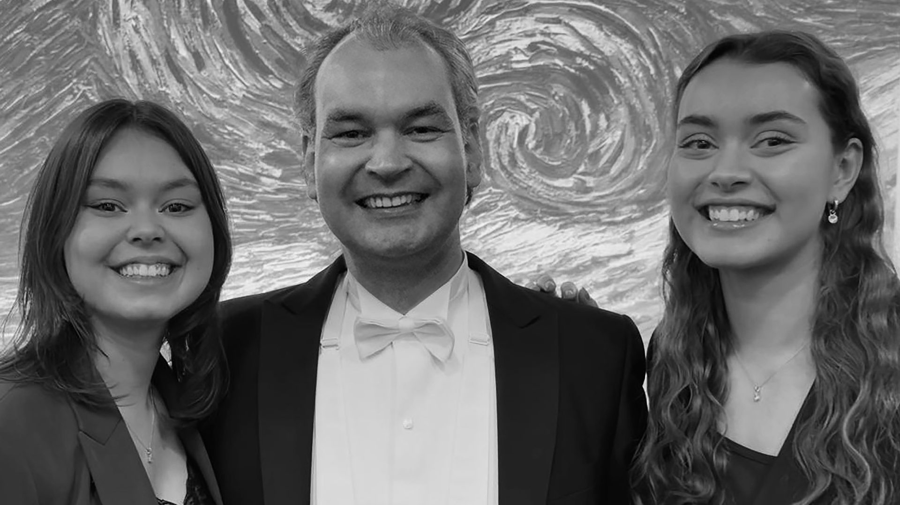
Ik ben oogarts en gespecialiseerd in chirurgie van het netvlies en het glasvocht (vitreoretinale chirurgie). Sinds 2024 werk ik in het Retina Operatiecentrum Ede en het Erasmus MC Rotterdam. Daarvoor was ik vijfentwintig jaar verbonden aan Het Oogziekenhuis Rotterdam: eerst als arts-assistent in opleiding, vanaf 2005 als vitreoretinaal chirurg, met focus op de meest complexe netvliesoperaties.
Mijn werk omvat de volledige breedte van de vitreoretinale chirurgie: van veelvoorkomende ingrepen zoals operaties bij netvliesloslating, maculagat en pucker, tot complexe behandelingen zoals chirurgie bij Von Hippel–Lindau, het draadloze submaculaire implantaat en operaties bij ernstige littekenvorming (PVR).
Naast de patiëntenzorg ben ik wetenschappelijk actief en houd ik mij in het bijzonder bezig met de vraag hoe littekenvorming na een netvliesloslating ontstaat, en wat er chirurgisch te doen is om die kans zo klein mogelijk te maken. Een terugkerend thema in mijn werk is dat een geslaagde eerste operatie de beste preventie is van een tweede.
In november 2024 promoveerde ik aan de Erasmus Universiteit Rotterdam op nieuwe inzichten in proliferatieve vitreoretinopathie (PVR) en de rol van vitreale cortexresten (VCR) als risicofactor voor terugkerende loslating. Het proefschrift beschrijft ook de ontwikkeling van twee instrumenten, het intra-oculaire diathermiepincet en de Vitreous Wipe. De Vitreous Wipe verwijdert vitreale cortexresten van het netvlies; het diathermiepincet combineert peelen en coaguleren, onder meer bij retinale hemangioblastomen. In 2026 verscheen in Acta Ophthalmologica mijn review met J. Sebag, die PVR beschrijft als samenspel van drie routes: vitreale steigers, inflammatoire conditionering en retinale remodellering (open access).
Naast werk in Nederland heb ik onder meer in Nepal netvliesoperaties uitgevoerd op uitnodiging van het Mechi Eye Hospital.
Ik heb een aantal landelijke premières in de vitreoretinale chirurgie uitgevoerd:
Twee operatie-instrumenten heb ik vanuit Netvlieschirurg BV ontwikkeld en gepatenteerd: de Intra-ocular Diathermy Forceps (2015) voor gecombineerd peelen en coaguleren tijdens netvliesoperaties, en de Vitreous Wipe (2017) voor het verwijderen van vitreale cortexresten. Beide vinden hun oorsprong in een klinische behoefte en worden inmiddels in de praktijk gebruikt.
Sinds 2019 ben ik Editorial Board Member bij Acta Ophthalmologica en review ik voor diverse oogheelkundige tijdschriften. Daarnaast was ik tussen 2014 en 2020 bestuurslid van de Nederlandse Werkgroep Vitreoretinale Chirurgie.
Referenties
Verwijsroute
Verwijzers uit de regio Ede verwijzen naar het Retina Operatiecentrum Ede, verwijzers uit de regio Rotterdam naar het Erasmus MC. Zelf opereer ik in Ede op dinsdag en woensdag, in Rotterdam op donderdag en vrijdag.
Dag en nacht; buiten kantoortijden doorgeschakeld naar de dienstdoende oogarts. Een spoedpatiënt wordt in principe dezelfde dag geopereerd.
Voor spoed bij complexe zorg en bij patiënten die niet in een zelfstandige kliniek geopereerd kunnen worden (ASA 3 of 4). Overleg vooraf met de dienstdoende oogarts; buiten kantoortijd (vanaf 17.00 uur) (010) 703 13 13.
Naast de gangbare retinachirurgie richt ik me met name op:
De verwijsroute verschilt per locatie.
Voor een snelle beoordeling helpt het zeer wanneer onderstaande info bij de verwijzing zit:
Een beknopt overzicht per ziektebeeld: wanneer doorverwijzen, wat we doen en wat de te verwachten resultaten zijn. Tussen haakjes staan de eigen resultaten van dr. Van Overdam: anatomisch succes zes maanden na de eerste operatie; de postoperatieve visus is gemeten na één maand.
Bij een acuut postoperatief infectie- of ontstekingsbeeld: directe verwijzing. Ieder uur tot start van de behandeling kan invloed hebben op het eindresultaat. Behandeling: intravitreale antibiotica zo snel mogelijk, afhankelijk van beloop gevolgd door vitrectomie. Resultaat afhankelijk van tijdsverloop en verwekker.
Bij bulbuspenetratie is sluiten van de wond binnen 24 uur essentieel: het endoftalmitisrisico neemt sterk toe bij langer uitstel. Bij een niet te grote penetratiewond met achtersegmentschade voeren we wondsluiting en vitrectomie bij voorkeur in één zitting uit. Direct verwijzen, eventueel buiten kantoortijden via het spoednummer. Bij grote of perforerende wonden heeft primair sluiten met vitrectomie in tweede instantie meestal de voorkeur.
De urgentie hangt af van macula-status en uitbreiding. Loslating tot binnen de vaatboog met aanliggende fovea: directe verwijzing met houdingsadvies tijdens transport; operatie zo snel mogelijk, eventueel ook in het weekend. Loslating buiten de vaatboog: spoedverwijzing, operatie zo snel mogelijk maar niet noodzakelijk in het weekend; patiënt instrueren te bellen bij uitbreiding scotoom. Loslating met afliggende macula: spoedverwijzing voor zo goed mogelijk visusherstel.
Resultaten: recidiefkans ongeveer 10% (eigen resultaten: <5%), PVR 5 tot 10% (eigen resultaten: <5%). Uiteindelijk succes ongeveer 96% (eigen resultaten: >95%). Met PVR bij presentatie of na een PVR-recidief: recidiefkans ongeveer 25 tot 30% (eigen resultaten: 5 tot 10%), uiteindelijk aanliggend bij ongeveer 95% (eigen resultaten: >95%).
Verwijs met dezelfde urgentie als bij een eerste loslating, afhankelijk van de macula-status. Behandeling: vitrectomie met verwijderen van vitreale cortexresten en membranen, zo nodig met retinotomie, en tamponade met siliconenolie of langwerkend gas. Resultaten: zie Netvliesloslating hierboven. Ook voor een tweede mening of bespreking van een complexe casus is verwijzing welkom.
Bij AMD, macroaneurysma of na trauma: verwijs op korte termijn; subretinaal bloed is toxisch voor fotoreceptoren. Behandeling afhankelijk van duur, grootte, dikte en locatie van de bloeding: combinatie of monotherapie van anti-VEGF, gasinjectie, intraoculaire tPA en/of vitrectomie. Bij goed partneroog kiezen we voor de minst invasieve route. Visuswinst is vaak beperkt en, afhankelijk van oorzaak, niet altijd op lange termijn handhaafbaar.
Zonder bekende oorzaak (vermoedelijk door achterste glasvochtloslating): bij een dichte bloeding zonder zicht op de fundus wordt bij 50 tot 70% een scheur gevonden; verwijs op korte termijn voor vitrectomie. Is de fundus voldoende te beoordelen, dan kan afwachten met controles; in een recente serie ontstond tijdens afwachten bij 17% een ablatio, meestal binnen drie weken. Bij venatak- of vena centralis-occlusie: verwijs bij uitblijvende resorptie of recidiverende bloedingen. Bij diabetes mellitus: zie hieronder. Resultaat na vitrectomie bij vaatocclusie: visusverbetering van drie regels of meer bij ongeveer 75%, recidiefbloeding bij ongeveer 12%, ablatio retinae bij ongeveer 4%.
Optimaal moment voor vitrectomie: 3 tot 7 dagen na cataractextractie. Eerder is het oog vaak nog te onrustig en de cornea oedemateus; later neemt het risico op chronische complicaties toe. Verwijs zo nodig dezelfde dag voor beoordeling. Resultaat: visus ≥ 0,5 bij ongeveer driekwart; ablatio retinae bij ongeveer 2 tot 3%; bij achtergebleven kernfragmenten is de prognose slechter.
Verwijs op korte termijn. Behandeling: vitrectomie met herpositioneren en fixeren van de lens, of vervangen door een kunstlens met sclerale of irisfixatie; de keuze hangt af van het type lens, de kapselsteun en de conditie van het hoornvlies.
Verwijs met spoed bij visus 0,4 of hoger: preoperatieve visus is bepalend voor het eindresultaat. Bij asymptomatische toevalsbevinding met visus 0,2 of hoger kan operatie zorgen voor een nuttig reserveoog. Een gat dat langer dan een jaar bestaat geeft minder visusherstel, maar wel afname van metamorfopsie. Een niet te oud gat sluit na vitrectomie in 90 tot 95% (eigen resultaten: >95%); visus verdubbelt gemiddeld; ablatio retinae 1 tot 3% (eigen resultaten: <1%).
Operatie-indicaties: hinderlijke metamorfopsie of progressieve visusdaling. Bij twijfel: expectatief enkele maanden ter beoordeling van progressie. De bestaansduur speelt een beperkte rol; de indicatie is vooral functioneel: hinder en progressie. Bij vitreo-maculaire tractie met klein adhesieoppervlak (<1500 μm) zonder preretinale membraan kan een gasinjectie de verkleving opheffen: succeskans circa 80%, hoger bij jongere phake patiënten; in DRCR Protocol AG en AH kreeg echter 12% een netvliesscheur of ablatio, waarna beide studies vroegtijdig zijn gestopt. Resultaat van vitrectomie: bij preoperatieve visus ≤0,4 verdubbelt deze gemiddeld; afname van metamorfopsie; visusverslechtering bij ongeveer 5%, overigens stabiel of verbeterd, in welke mate afhankelijk van de uitgangssituatie; postoperatief CMO waarvoor behandeling nodig is bij ongeveer 5 tot 10% (in een Britse multicenterstudie geen verschil tussen phacovitrectomie en sequentiële chirurgie: 6,5% vs. 9%; in enkele single-centerstudies vaker na phacovitrectomie); ablatio retinae 1 tot 2% (eigen resultaten: <1%).
Verwijsindicaties: dichte glasvochtbloeding zonder zicht op de fundus, actieve neovascularisatie die onvoldoende reageert op panretinale lasercoagulatie (na ≈2000 coagulaten), recidiverende bloedingen bij inactieve neovascularisatie, progressie van een tractie-ablatio en maculaoedeem met vitreo-maculaire tractie of premaculaire membranen. Vitrectomie eventueel met voorafgaande anti-VEGF-injectie; bij uitgebreide fibrovasculaire proliferatie kort vóór de vitrectomie, gezien het risico op toename van tractie (crunch). Resultaat: stabiele situatie voor lange termijn; visusherstel afhankelijk van bestaande retinaschade. Soms een vroege nabloeding: bij ongeveer 30%, met anti-VEGF vooraf bij ongeveer 10%; meestal spontane resorptie.
Een vitrectomie voor floaters volgt in de regel niet binnen een half jaar na ontstaan: gewenning kan optreden. De hinder is subjectief; de patiënt maakt de keuze na uitleg over voor- en nadelen. Resultaat: na een volledige vitrectomie een heldere glasvochtruimte; blijft er een rest glasvocht op het netvlies, dan kunnen later nieuwe troebelingen ontstaan. Ablatio retinae 1 tot 2% (eigen resultaten: <1%).
Verwijs vroeg, ook bij kleine tumoren: hoe kleiner het hemangioblastoom bij behandeling, hoe kleiner de kans op exsudatie, tractie en loslating. Behandeling afhankelijk van grootte en lokalisatie: laser of cryotherapie, of vitrectomie met endodiathermie en zo nodig excisie met het intra-oculaire diathermiepincet.
Het draadloze subretinale implantaat gaf in de PRIMAvera-studie klinisch betekenisvolle visuswinst bij geografische atrofie door AMD. Het is nog niet beschikbaar als reguliere zorg; verwijzen voor behandeling is daarom nog niet mogelijk. Voor informatie of overleg kunt u contact opnemen.
Cijfers uit recente internationale literatuur; tussen haakjes de eigen resultaten van dr. Van Overdam. Resultaat hangt mede af van de uitgangssituatie, zoals de uitgebreidheid van de netvliesloslating of de grootte van het maculagat.
Het Retina Operatiecentrum Ede ziet nieuwe patiënten op zeer korte termijn (reguliere toegangstijd ongeveer een week); een spoedpatiënt wordt in principe dezelfde dag geopereerd. Actuele termijnen staan op de pagina verwijstermijnen van het Retina Operatiecentrum.
Bent u oogarts en wilt u een complexe casus bespreken zonder formele verwijzing? Stuur dan een bericht via Siilo of e-mail. Ik denk graag mee over indicatiestelling, technische aanpak of timing van een eventuele operatie.
Voor het versleuteld toezenden van patiëntgegevens gebruikt u Siilo, Zorgplatform (Erasmus MC) of het beveiligde verwijsformulier op de verwijzerspagina van het Retina Operatiecentrum. Contactgegevens
Referenties
Reeks artikelen
Patiëntvriendelijke achtergrondartikelen over de meest gestelde vragen rond netvliesaandoeningen en netvliesoperaties.
Hoe herkent u het verschil tussen "rustige" en "alarmsignaal"-floaters, en wanneer moet u dezelfde dag naar de oogarts?
Meestal vijf dagen een vaste houding, zes keer per dag een uur en zo mogelijk ook 's nachts: dat valt zwaar, maar maakt vaak het verschil tussen een geslaagde en mislukte operatie.
Patiëntvriendelijke uitleg over de belangrijkste oorzaak van een tweede operatie, en hoe operatietechniek het risico beïnvloedt.
Klachten & symptomen
Vrijwel iedereen ziet weleens iets vreemds in zijn ogen: een vlokje dat meedrijft als u uw blik verlegt, of een korte flits in de zijkant van uw gezichtsveld. Meestal is dat onschuldig. Maar soms zijn floaters en lichtflitsen het eerste signaal van een netvliesscheur of -loslating, en dan telt elk uur.
Het oog is van binnen gevuld met glasvocht: een heldere gel-achtige substantie. Met het ouder worden vervloeit deze gel langzaam. Op een gegeven moment zakt hij in elkaar en laat hij daarbij los van het netvlies: een proces dat we de achterste glasvochtloslating noemen. Daarbij ontstaan kleine condensaties of vezels die schaduw werpen op het netvlies. Die schaduwen ziet u als puntjes, lijntjes of "spinrag" die meedrijven met uw oogbewegingen. Dit zijn de meest voorkomende, onschuldige floaters.
Wanneer het glasvocht aan het netvlies trekt, geeft het netvlies een prikkel die uw hersenen interpreteren als licht. Vandaar het verschijnsel "lichtflitsen", vaak aan één kant van het gezichtsveld, vaak duidelijker in een donkere omgeving. Bij een ongecompliceerde achterste glasvochtloslating houden deze flitsen meestal op zodra het glasvocht volledig los is.
Flitsen of oogmigraine? Flitsen door het glasvocht zijn kort, zitten aan de zijkant van het beeld, in één oog, en vallen vooral op in het donker of als u uw oog beweegt. Oogmigraine geeft flikkerende zigzaglijnen of een flikkerende vlek, duurt meestal 5 tot 60 minuten, blijft zichtbaar als u één oog dichtdoet en wordt vaak gevolgd door hoofdpijn. Oogmigraine is niet schadelijk voor het oog.
Een paar nieuwe floaters zonder verdere klachten, die langzaam in aantal afnemen, passen meestal bij een gewone achterste glasvochtloslating. Hetzelfde geldt voor een enkele lichtflits aan de rand van het zicht die binnen enkele dagen verdwijnt. Bel ook dan dezelfde dag uw oogarts voor een controle, zodat een oogarts kan bevestigen dat er geen scheurtje is ontstaan.
Een achterste glasvochtloslating is op zich geen ziekte; bij ruwweg 15% van de mensen leidt deze echter tot een netvliesscheurtje. Een onbehandeld scheurtje kan zich ontwikkelen tot een netvliesloslating. De controle is daarom niet om u zorgen te maken, maar om er zeker van te zijn dat het netvlies intact is. Een eventueel scheurtje kan vaak met een korte laserbehandeling worden gehecht: een ingreep van 10 tot 20 minuten, die de kans op een latere loslating sterk verkleint.
Heeft u plots nieuwe floaters of flitsen? Bel dezelfde dag uw eigen oogarts of de oogheelkundige spoedpost van een ziekenhuis bij u in de buurt. Vermeld duidelijk dat het om plotse nieuwe klachten gaat.
Wachten "tot het over gaat" is bij plotse oogklachten zelden de juiste keuze. Een controle die niets oplevert is een geruststelling; een controle die wel iets oplevert kan uw zicht redden.
Referenties
Dr. Koen van Overdam is vitreoretinaal chirurg in het Retina Operatiecentrum Ede en het Erasmus MC, Rotterdam.
Na de operatie
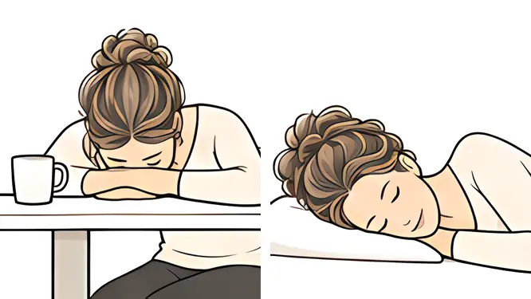
Als u een gas- of luchtbel in uw oog krijgt na een netvliesoperatie, hoort u van uw chirurg een houdingsadvies: meestal vijf dagen lang zes keer per dag een uur uw hoofd in een bepaalde positie houden, verdeeld over de dag en zo mogelijk ook 's nachts. De meeste patiënten vinden dit het zwaarste deel van het herstel. Toch zijn juist deze dagen vaak doorslaggevend voor het succes van de operatie.
Aan het einde van een vitrectomie wordt het oog gevuld met een gasmengsel of met lucht. De bel ligt van binnenuit tegen het netvlies en sluit een scheur of maculagat af. Er kan dan geen vocht meer doorheen, zodat het herstelweefsel zich rustig kan ontwikkelen. Een gasbel zweeft altijd naar boven, net zoals een luchtbel in een glas water. De plek waar de gasbel het netvlies aanraakt wordt dus volledig bepaald door hoe u uw hoofd houdt.
Stel: er is een scheur in het bovenste deel van uw netvlies. Houdt u het hoofd rechtop, dan drukt de gasbel netjes tegen de scheur. Maar gaat u op uw rug liggen, dan drijft de bel naar voren, tegen de lens en de iris, en niet tegen de scheur. Die blijft dan urenlang open en het herstelweefsel krijgt geen kans zich te vormen; bovendien kan de oogdruk stijgen en ontstaat sneller staar. Bij een maculagat is de logica andersom: dan kijkt u juist naar de grond, zodat de bel tegen het centrum van het netvlies ligt. Zit de scheur onderin het netvlies, dan bepaalt uw chirurg welke houding de bel het best op de juiste plek brengt.
Het advies is dus letterlijk geometrie: uw chirurg vertelt u welke kant van het netvlies steun nodig heeft, en uw hoofdpositie zorgt dat de bel daar terechtkomt.
Dagen achter elkaar met het gezicht naar beneden, of op één zijde slapen, is uitputtend. Een paar praktische dingen helpen:
Het advies verschilt per operatie. Meestal is het 5 dagen, 6 keer per dag 1 uur, verdeeld over de dag en zo mogelijk ook 's nachts; bij een maculagat kijkt u dan naar de grond. Met siliconenolie is een houding meestal niet of slechts kort nodig. Volg het schema dat u na de operatie meekrijgt: de details zijn afgestemd op uw specifieke situatie. Zolang er gas in uw oog zit, geldt daarnaast: niet plat op de rug (tenzij uw oogarts dat voorschrijft), niet vliegen en geen lachgas, ook niet bij de tandarts.
Eerlijk zijn helpt iedereen verder. Als u merkt dat u de houding niet aankan (door pijn, claustrofobie, hartritmeklachten of andere redenen), meld dit dan zo snel mogelijk. Soms kunnen we het advies aanpassen, een hulpmiddel voorschrijven, of bij ernstige beperking een andere strategie kiezen. Dat is altijd beter dan stilletjes afwijken van het advies en hopen dat het wel goed komt.
"De dagen van het houdingsadvies zijn zwaar. Maar het is ook één van de weinige momenten in het hele traject waarbij u zelf actief bijdraagt aan het slagen van de operatie. Volhouden loont."
Dr. Koen van Overdam is vitreoretinaal chirurg in het Retina Operatiecentrum Ede en het Erasmus MC, Rotterdam.
Achtergrond
Bij een geslaagde netvliesoperatie ligt het netvlies na de ingreep weer op zijn plek. Toch komt het bij ongeveer 10% van de patiënten opnieuw los, meestal door littekenvorming. Deze complicatie heet PVR, en is het belangrijkste obstakel in de hedendaagse netvlieschirurgie.
PVR staat voor proliferatieve vitreoretinopathie. Het is een proces waarbij op en onder het netvlies littekenweefsel ontstaat. Dat littekenweefsel trekt samen, en kan het netvlies opnieuw lostrekken van de oogwand, zoals een laagje plakband dat samentrekt en het papier eronder verkreukelt.
PVR is geen "tweede ziekte" maar een complicatie die voortkomt uit het oorspronkelijke probleem. Bij het ontstaan spelen meerdere factoren samen een rol: een ontstekingsreactie in het oog, pigmentcellen die via de netvliesscheur in het glasvocht terechtkomen, een reactie van het netvlies zelf, en achtergebleven glasvochtresten, die de basis vormen waarop littekenweefsel kan ontstaan.
Een tweede operatie aan een oog met PVR is technisch zwaarder. De membranen moeten zorgvuldig worden afgepeld zonder het netvlies te beschadigen, en vaak is een langduriger interne tampon nodig, zoals siliconenolie, die later in een aparte ingreep weer verwijderd moet worden. Het zichtherstel na een PVR-operatie is gemiddeld minder goed dan na een primaire ingreep, vooral als de gele vlek bij de tweede loslating betrokken raakt.
Geen enkele techniek kan PVR volledig uitsluiten: sommige ogen hebben een biologische aanleg die het ontstaan waarschijnlijker maakt, en bij sommige loslatingen is al bij presentatie pigmentdispersie zichtbaar als waarschuwingsteken. Maar bij de operatietechniek zijn keuzes te maken die de kans aanzienlijk beïnvloeden.
Onze klinische ervaring en onderzoeksbevindingen wijzen erop dat zorgvuldig uitvoeren van bovenstaande stappen het verschil maakt. Een vooraf opgezette studie met vier chirurgen (100 ogen) vond bij 36% van de eerste vitrectomieën cortexresten op het netvlies. Bij ogen met cortexresten liet het netvlies bij 17% opnieuw los, bij ogen zonder bij 0%. Het systematisch herkennen en behandelen ervan is sindsdien een vast onderdeel van onze techniek.
Met triamcinolon en het shaven van de glasvochtbasis ontstaat PVR na 5 tot 10% van de eerste operaties voor een netvliesloslating; als daarbij ook de cortexresten worden verwijderd, na minder dan 5% (eigen resultaten). Minder PVR betekent in de praktijk dat minder mensen een tweede operatie nodig hebben.
Voor u is dit allemaal vakinhoudelijk detail. Maar het kan voor uw uitkomst veel uitmaken. Als u of uw verwijzer twijfelt over de operatie of een verhoogd risico vermoedt, is het altijd zinvol om vooraf met de chirurg te bespreken op welke manier en met welke technieken zal worden geopereerd. Een operatie die iets langer duurt of iets meer minutieus wordt uitgevoerd, kan op de langere termijn het verschil maken tussen één operatie en twee.
De eerste operatie is het belangrijkste moment. Voorkómen is altijd beter dan herstellen.
Referenties
Dr. Koen van Overdam is vitreoretinaal chirurg in het Retina Operatiecentrum Ede en het Erasmus MC, Rotterdam. Hij promoveerde in november 2024 aan de Erasmus Universiteit Rotterdam op nieuwe inzichten in PVR en de rol van vitreale cortexresten, en op de ontwikkeling van chirurgische instrumenten.
Wetenschap
Mijn werk combineert klinische praktijk met onderzoekslijnen, peer-reviewed publicaties en het ontwikkelen van nieuwe operatie-instrumenten. Voor de volledige publicatielijst zie de externe profielen onderaan.
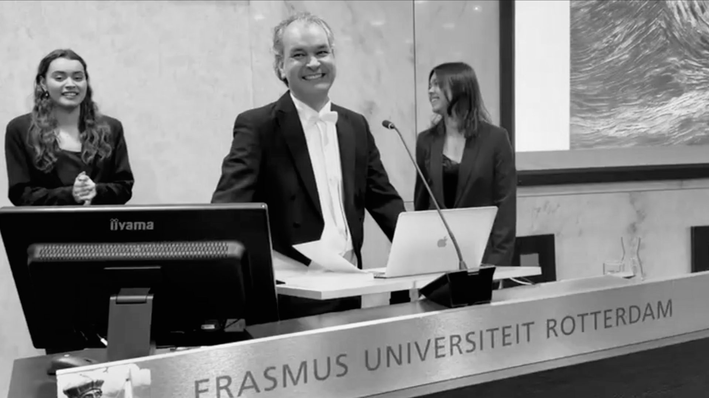
De centrale onderzoekslijn van het proefschrift (Erasmus Universiteit Rotterdam, 2024). Bij een vitrectomie is volledige verwijdering van het glasvocht essentieel om proliferatieve vitreoretinopathie (PVR) te voorkomen: de belangrijkste oorzaak van een tweede operatie na een netvliesloslating. Het onderzoek toonde aan dat in 30 tot 40% van de vitrectomieën voor netvliesloslating een microscopisch dun laagje glasvocht (vitreale cortexresten, VCR) achterblijft op het netvliesoppervlak. Met triamcinolon, kristallen die aan het glasvocht hechten, en het zorgvuldig shaven van de glasvochtbasis ontstaat PVR na 5 tot 10% van de eerste operaties; als daarbij ook de cortexresten worden verwijderd, in mijn eigen resultaten na minder dan 5%.
Bij VHL-patiënten ontstaan op het netvlies bloedvatwoekeringen die kunnen lekken en littekenweefsel vormen. Vroeger werd alleen geopereerd bij hele uitgebreide afwijkingen, omdat de operatie zelf risico's met zich meebracht. Door verbeterde technieken (onder meer het zorgvuldig verwijderen van glasvocht en cortexresten en het gebruik van intra-oculaire diathermie) wordt vroeg opereren een steeds reëlere optie.
Twee instrumenten zijn vanuit Netvlieschirurg BV ontwikkeld en gepatenteerd. Beide ontstonden uit een directe klinische behoefte: een gangbaar bipolair instrument dat onvoldoende controle gaf over bloedingen tijdens hemangioblastoma-chirurgie, en het gebrek aan een efficiënte techniek voor het verwijderen van vitreale cortexresten. Hieronder beschreven onder Patenten.
Voor de volledige lijst zie het Pure-profiel van het Oogziekenhuis of PubMed.
Twee gepatenteerde operatie-instrumenten via Netvlieschirurg BV:
De publicaties
Acta Ophthalmol · 2026
Open access ↗N Engl J Med · 394(3):232–242
Open access ↗Trans Vis Sci Tech · 15(1):5
Open access ↗J Evid Based Med · 18(2):e70041
Open access ↗Vestnik VGMU · 24(3):76–88
Open access ↗Acta Ophthalmol · 102(8):859–880
Open access ↗Acta Ophthalmol · 102(7):836–842
Open access ↗Acta Ophthalmol · 102(5):506–512
PubMed ↗Acta Ophthalmol · 102(1):99–106
PubMed ↗Biomolecules · 14(1):122
Open access ↗Case Rep Ophthalmol · 14(1):546–554
Open access ↗Ophthalmology · 130(6):e21
Open access ↗Graefes Arch Clin Exp Ophthalmol · 260(12):3837–3845
PubMed ↗Acta Ophthalmol · 100(8):e1749–e1759
Open access ↗Acta Ophthalmol · 100(6):e1352–e1353
Open access ↗Expert Rev Ophthalmol · 17(4):263–280
PubMed ↗Acta Ophthalmol · 100(1):e38–e46
Open access ↗Am J Ophthalmol Case Rep · 24:101219
Open access ↗Case Rep Ophthalmol · 12(3):778–783
Open access ↗Ned Tijdschr Geneeskd · 165:D5850
PubMed ↗Acta Ophthalmol · 98(5):464–471
PubMed ↗Retina · 40(6):1169–1175
PubMed ↗Retina · 40(6):1094–1097
PubMed ↗Acta Ophthalmol · 98(2):e261–e262
Open access ↗Acta Ophthalmol · 97(8):e1150–e1151
PubMed ↗Am J Ophthalmol Case Rep · 15:100472
PubMed ↗Acta Ophthalmol · 97(5):e747–e752
Open access ↗Acta Ophthalmol · 97(4):347–352
PubMed ↗Exp Eye Res · 181:171–177
PubMed ↗Acta Ophthalmol · 96(4):348–355
PubMed ↗Acta Ophthalmol · 96(4):420–422
Open access ↗Acta Ophthalmol · 95(1):97–102
PubMed ↗Acta Ophthalmol · 93(8):739–744
PubMed ↗Ophthalmology · 120(3):616–622
PubMed ↗Acta Ophthalmol · 89(6):e483–e489
PubMed ↗Br J Ophthalmol · 90(3):328–332
PubMed ↗Arch Ophthalmol · 123(4):479–484
PubMed ↗Ophthalmology · 110(12):2409–2412
PubMed ↗Arch Ophthalmol · 119(10):1483–1486
PubMed ↗Am J Ophthalmol · 132(3):343–347
PubMed ↗Graefes Arch Clin Exp Ophthalmol · 239(9):698–704
PubMed ↗Transpl Int · 13 Suppl 1:S504–S507
PubMed ↗Transplant Proc · 29(1-2):955–956
PubMed ↗Actueel & achtergrond
Twee soorten artikelen op één plek: actueel (recente posts, publicaties en mediavermeldingen) en achtergrond: verdiepende uitleg over aandoeningen en operaties.
Recente posts, publicaties en mediavermeldingen rond mijn vakgebied.
Voor het Rotterdams Natuurkundig Genootschap: aandoening, techniek, PRIMAvera-resultaten en de eerste Nederlandse ervaring.
Voordracht over proliferatieve vitreoretinopathie als samenspel van vitreale steigers, inflammatoire conditionering en retinale remodellering.
Met J. Sebag: een integratief, multi-pathway perspectief op het ontstaan en de behandeling van PVR. Open access.
Verdiepende artikelen over de meest gestelde vragen rond netvliesaandoeningen en netvliesoperaties.
Hoe herkent u het verschil tussen "rustige" en "alarmsignaal"-floaters, en wanneer moet u dezelfde dag naar de oogarts?
Meestal vijf dagen een vaste houding, zes keer per dag een uur en zo mogelijk ook 's nachts: dat valt zwaar, maar maakt vaak het verschil tussen een geslaagde en mislukte operatie.
Patiëntvriendelijke uitleg over de belangrijkste oorzaak van een tweede operatie, en hoe operatietechniek het risico beïnvloedt.
Logboek
Posts, publicaties en mediavermeldingen rond mijn vakgebied. Voor verdiepende artikelen, zie Achtergrond.
2026
Lezing voor een breed publiek over het subretinale PRIMA-implantaat bij geografische atrofie: de aandoening, de techniek, de resultaten van de PRIMAvera-studie en de eerste Nederlandse ervaring.
Voordracht in een free paper-sessie van het 29e EVER-congres over proliferatieve vitreoretinopathie als samenspel van drie routes: vitreale steigers (cortexresten met hyalocyten), inflammatoire conditionering en retinale remodellering.
Voordracht Vitreoschisis and vitreous cortex remnants: from basic mechanisms to surgical strategies in PVR prevention op het 26e Euretina-congres (1–4 oktober): van het ontstaan van cortexresten tot hun verwijdering tijdens de operatie, en hoe zij met inflammatie en retinale remodellering samenkomen in PVR.
Uitgenodigd spreker op het congres van de Asia-Pacific Vitreo-retina Society in Australië, onder meer in de module over complicaties en in het “Near Live” Retinal Detachment Surgery Symposium van Lawrence Lee. De voordrachten: Proliferative vitreoretinopathy: predicting and preventing the enemy, Proliferative vitreoretinopathy: an integrative, multi-pathway perspective on pathogenesis and therapy en Retinectomy in PVR: cutting the retina is not enough.
Met J. Sebag. Het artikel beschrijft PVR als biologisch proces dat ontstaat uit de wisselwerking van drie routes, en formuleert toetsbare hypothesen in plaats van voorschriften. Open access.
Lezen in Acta OphthalmologicaVoordracht Vitreoschisis and its role in PVR in de sessie over PVR-profylaxe (18 april), over cortexresten na vitreoschisis als aangrijpingspunt voor preventie.
Presentatie van de PRIMAvera-studie uit de New England Journal of Medicine: het PRIMA-systeem herstelt centrale visus bij geografische atrofie door AMD.
Mede-organisator van deze besloten bijeenkomst van vitreoretinaal chirurgen (17–20 januari, Oostenrijk), met de voordracht Reframing PVR: beyond retinal injury.
Presentatie voor de LVAO, de vereniging van arts-assistenten oogheelkunde, over retinale hemangioblastomen bij de ziekte van von Hippel-Lindau, een van mijn onderzoekslijnen.
Met Kiki Bals, Anass Hajjaj, Emine Kiliç en collega’s van het Erasmus MC. Bij patiënten met een erfelijke VHL-variant bleek verlies van het volledige chromosoom 3 de waarschijnlijke tweede ‘hit’ in retinale hemangioblastomen; andere somatische veranderingen waren zeldzaam. Open access.
Lezen in TVST2025
Bij 26 van de 32 deelnemers met geografische atrofie door AMD die twaalf maanden werden gevolgd (81%), verbeterde de gezichtsscherpte met het subretinale PRIMA-implantaat klinisch relevant. Ik ben medeauteur en voerde de eerste implantatie in Nederland uit.
Lezen in NEJMEen mooi initiatief van Stichting Oogfonds Nederland samen met SBS6, dat blindenvoetbal in de spotlight zet én wetenschappelijk oogonderzoek ondersteunt. Vier teams van vijf spelers, elk met een Bekende Voetballer en een introducé. Ik nam met veel plezier deel in het team van Ron Vlaar.
Bekijken op LinkedInVirtual session van de Association for Research in Vision and Ophthalmology (ARVO) over de rol van vitreale cortexresten in PVR-management. Co-presentatie met J. Sebag, Stefaniya Boneva en Peter Van Etten.
Aankondiging op LinkedInMedeauteur van zeven aanbevelingen voor het foldable capsular vitreous body (FCVB) bij ernstig oogtrauma en siliconenolie-afhankelijke ogen, opgesteld door een multinationale expertgroep met de Delphi-methode.
Lezen in J Evid Based MedInterview over de inzichten uit het proefschrift en een terugblik op de promotie. Met triamcinolon en het shaven van de glasvochtbasis ontstaat PVR na 5 tot 10% van de eerste operaties; als daarbij ook de vitreale cortexresten worden verwijderd, na minder dan 5% (eigen resultaten). Triamcinolon is daarbij onmisbaar om de resten zichtbaar te maken.
Lezen op Roche4professionalsMet Inna Malinouskaya en collega’s uit Belarus. Een geïsoleerd retinaal capillair hemangioblastoom werd met vitrectomie volgens mijn techniek verwijderd voordat ernstige secundaire complicaties ontstonden; de gezichtsscherpte herstelde tot 0,6 en bleef drie jaar stabiel. Russischtalig, met Engelse samenvatting. Open access.
Lezen in Vestnik VGMU2024
Nieuwe inzichten in proliferatieve vitreoretinopathie: de rol van vitreale cortexresten. Het proefschrift onderzoekt hoe glasvochtrestanten bijdragen aan littekenvorming na netvliesoperaties, en welke operatietechnieken het PVR-risico kunnen verlagen.
Aankondiging op LinkedIn2023
Toekenning van de Ophthalmology Star Award 2023 op het ESCRS-congres voor onderzoek op het gebied van vitreoretinale chirurgie.
Bekijken op LinkedInInterview over de afgelopen jaren in Het Oogziekenhuis Rotterdam, met aandacht voor vernieuwende inzichten, verfijnde operatietechnieken en gepatenteerde instrumenten. Reductie van het PVR-risico van >10% naar 5–10% door zorgvuldige glasvochtverwijdering.
Lezen op MedNet2021
Klinische les in het Nederlands Tijdschrift voor Geneeskunde met Jennifer Verhoekx, Olta Gishti, Redmer van Leeuwen en Niels Crama. Patiënten die zich melden met acute toename van vlokjes hebben 14–23% kans op een netvliesscheur, ook zonder lichtflitsen.
Bekijken op LinkedInVier landelijke premières uit Het Oogziekenhuis Rotterdam waar ik medeverantwoordelijk voor was, ook terug te vinden op de chirurg-pagina.
Implantatie van een 2 × 2 mm chip onder de macula bij een patiënt met droge maculadegeneratie: een Nederlandse première in netvliesoperaties.
Lezen op oogziekenhuis.nlVoretigene neparvovec (Luxturna) bij een 26-jarige patiënt met Leber congenitale amaurosis (RPE65-mutatie). Het toevoegen van een gezond gen kan netvliesfunctie helpen herstellen.
Lezen op oogziekenhuis.nlZEISS ARTEVO 800 met intraoperatieve OCT: tijdens het opereren scans van het netvlies maken en de structuren direct via een 3D-scherm beoordelen.
Lezen op oogziekenhuis.nlBij VHL-patiënten ontstaan op het netvlies bloedvatwoekeringen die kunnen lekken. Nieuwe operatietechnieken maken vroege chirurgische interventie veiliger en effectiever.
Lezen op oogziekenhuis.nlJuridisch
Bent u niet tevreden over uw zorg of behandeling, dan horen we dat graag. Hieronder leest u stapsgewijs hoe u een klacht kunt indienen.
Een klacht hoeft niet altijd te leiden tot een formele procedure. Vaak helpt een gesprek al om iets recht te zetten of misverstanden weg te nemen. We nodigen u uit om uw zorg of klacht eerst direct met ons te bespreken: daarna staan u meerdere wegen open als u er niet samen uitkomt.
Wanneer er iets is gebeurd dat voor u onduidelijk, onaangenaam of onjuist aanvoelt, vraag dan om een gesprek. U kunt dit doen tijdens uw vervolgafspraak, telefonisch of via een e-mailbericht. Wij nemen elke klacht serieus en proberen er samen met u uit te komen.
Komen we er in een gesprek niet uit, dan kunt u uw klacht schriftelijk indienen. Beschrijf zo concreet mogelijk wat er is gebeurd, wanneer dat was en wat uw klacht is. Stuur uw bericht aan de kliniek waar u bent behandeld. Voor het Retina Operatiecentrum geldt het klachtenreglement van Eyescan; voor het Erasmus MC de klachtenopvang van het Erasmus MC. U kunt ook het contactformulier op deze site gebruiken.
Op grond van de Wet kwaliteit, klachten en geschillen zorg (Wkkgz) heeft elke zorgaanbieder een onafhankelijke klachtenfunctionaris. Deze persoon kan u helpen bij het formuleren van uw klacht en bemiddelen tussen u en de zorgaanbieder. De klachtenfunctionaris is gratis en onafhankelijk. U vindt de contactgegevens in de klachtenregeling van de kliniek (zie stap 2).
Komt u er met behulp van de klachtenfunctionaris ook niet uit, dan kunt u uw klacht voorleggen aan de geschilleninstantie waarbij de kliniek is aangesloten; welke dat is, staat in de klachtenregeling van de kliniek. De uitspraak is voor beide partijen bindend.
Op een schriftelijke klacht ontvangt u binnen zes weken een gemotiveerde reactie. Deze termijn kan in uitzonderlijke situaties met vier weken worden verlengd, mits u daarover tijdig wordt geïnformeerd.
Een klacht heeft geen invloed op uw verdere behandeling of de relatie met uw zorgverleners. Klachtbehandeling gebeurt vertrouwelijk; informatie wordt alleen gedeeld met personen die direct betrokken zijn bij de afhandeling.
Juridisch
Hoe deze website met uw gegevens omgaat: in begrijpelijke taal en in lijn met de Algemene verordening gegevensbescherming (AVG).
Deze website is een informatieve site over netvlieszorg. We verzamelen alleen gegevens die nodig zijn om uw vraag of contactverzoek te kunnen beantwoorden. Gegevens die u via deze site achterlaat (bijvoorbeeld via het contactformulier) worden behandeld volgens de Algemene verordening gegevensbescherming en de Nederlandse Uitvoeringswet (UAVG). Verantwoordelijk voor de gegevens die via deze website binnenkomen is dr. K.A. van Overdam (Netvlieschirurg B.V.); u bereikt hem via het contactformulier.
Voor zorginhoudelijke verwerkingen rondom uw behandeling (medisch dossier, afspraken, doorverwijzingen) verwijzen we u naar de privacyverklaring van de kliniek waar u wordt behandeld: het Retina Operatiecentrum (Eyescan) of het Erasmus MC. Die kliniek is als zorgaanbieder verantwoordelijk voor uw medische gegevens.
Wanneer u het contactformulier gebruikt, verwerken we de gegevens die u zelf invult: uw naam, e-mailadres, telefoonnummer (indien u dat invult) en de inhoud van uw bericht. We gebruiken deze gegevens uitsluitend om uw bericht te kunnen beantwoorden. Het formulier wordt verwerkt via Google (Google Apps Script); zo komt uw bericht bij dr. Van Overdam binnen. Vermeld in het formulier liever geen medische gegevens.
De website plaatst geen tracking-cookies en verzamelt geen analytics-data of gegevens voor advertentiedoeleinden. De site wordt gehost via GitHub Pages (GitHub); GitHub legt IP-adressen van bezoekers vast voor beveiliging.
Berichten die via het contactformulier binnenkomen worden bewaard zolang dat nodig is voor afhandeling van uw vraag, en daarna nog maximaal twaalf maanden voor referentie. Daarna worden ze verwijderd. Wanneer een bericht aanleiding geeft tot een afspraak of behandeling, worden de relevante gegevens opgenomen in het medische dossier van de kliniek waar u wordt behandeld.
Gegevens worden niet met anderen gedeeld dan de genoemde dienstverleners (GitHub voor de hosting, Google voor het contactformulier), behalve wanneer dat noodzakelijk is voor uw zorgvraag, bijvoorbeeld doorgifte aan uw verwijzend oogarts. In dat geval gebeurt de doorgifte via versleutelde kanalen (Siilo, Edifact of beveiligd elektronisch berichtenverkeer).
U heeft het recht om in te zien welke gegevens we van u hebben, om die te laten corrigeren of verwijderen, en om bezwaar te maken tegen de verwerking. Voor verzoeken over uw medisch dossier loopt dit via de kliniek waar u bent behandeld; voor gegevens die alleen via deze website zijn binnengekomen kunt u rechtstreeks contact opnemen.
Als u meent dat met uw gegevens niet zorgvuldig is omgegaan, vragen we u dat in eerste instantie met ons te bespreken. U heeft daarnaast altijd het recht om een klacht in te dienen bij de Autoriteit Persoonsgegevens (autoriteitpersoonsgegevens.nl).
Juridisch
Wat de informatie op deze site wel en niet is, en wat in elk geval geldt: geen website vervangt het oordeel van uw eigen oogarts.
Deze website is bedoeld om patiënten, hun naasten en verwijzende oogartsen op een toegankelijke manier te informeren over netvliesaandoeningen, glasvocht- en netvlieschirurgie, en de werkwijze binnen onze praktijk. De inhoud is met zorg samengesteld en regelmatig bijgewerkt.
De informatie op deze site is algemeen van aard. Zij is niet bedoeld (en niet geschikt) ter vervanging van een persoonlijk consult, diagnose of behandeladvies van een gekwalificeerde oogarts. Iedere oogklacht en iedere behandelafweging is individueel: bij twijfel of klachten neemt u altijd contact op met uw eigen oogarts of huisarts.
Bij plotse afname van het zicht, een schaduw of "gordijn" in het beeld, lichtflitsen of een plotse toename van vlokjes (floaters): wacht niet. Neem dezelfde dag contact op met uw oogarts of de Spoedeisende Hulp. Bent u bij ons geopereerd, bel dan het spoednummer van uw kliniek: Retina Operatiecentrum (088) 111 19 90 of Erasmus MC (010) 704 0 704. Voor uitgebreidere uitleg over wanneer iets spoed is, zie de pagina over netvliesloslating.
De inhoud is gebaseerd op de stand van de oogheelkundige praktijk op het moment van schrijven. Inzichten en richtlijnen veranderen; we stellen alles in het werk om de informatie actueel te houden, maar kunnen geen garantie geven op volledigheid of toepasselijkheid op individuele situaties. Aan de cijfers en percentages op deze site (voor zover het de eigen resultaten van dr. Van Overdam betreft) kan geen individuele uitkomstgarantie worden ontleend.
Deze site bevat verwijzingen naar externe websites, bijvoorbeeld die van het Retina Operatiecentrum, beroepsorganisaties of wetenschappelijke publicaties. Voor de inhoud, beschikbaarheid en het privacybeleid van die externe sites zijn de betreffende beheerders zelf verantwoordelijk.
De teksten, afbeeldingen en het ontwerp van deze site zijn auteursrechtelijk beschermd. Voor overname of hergebruik (bijvoorbeeld in onderwijs- of voorlichtingsmateriaal) is voorafgaande schriftelijke toestemming nodig. Korte citaten met bronvermelding zijn doorgaans toegestaan.
Twee locaties
Hoe u bij ons terechtkomt, de gegevens van beide locaties en een formulier voor algemene vragen.
Verwijzing. Voor een afspraak, ook voor een second opinion, heeft u een verwijzing nodig. Bij het Erasmus MC is dat een verwijzing van uw oogarts; bij het Retina Operatiecentrum kan ook een optometrist verwijzen. Na de verwijzing neemt de kliniek contact met u op.
Welke locatie. Het Retina Operatiecentrum in Ede is er voor patiënten uit de regio Ede, het Erasmus MC in Rotterdam voor patiënten uit de regio Rotterdam en voor complexe zorg. Uw oogarts verwijst u naar de juiste locatie.
Nacontroles. De controles na de operatie zijn op de locatie waar u bent geopereerd. Na twee tot drie controles gaat u terug naar uw eigen oogarts.
Dr. Van Overdam: donderdag en vrijdag
Academische afdeling Oogheelkunde.
Dr. Van Overdam: dinsdag en woensdag
Dagbehandelingscentrum voor glasvocht- en netvlieschirurgie.
Contactformulier
Voor een afspraak heeft u een verwijzing nodig (zie hierboven); met vragen over uw behandeling belt u de kliniek waar u onder behandeling bent. Voor andere vragen kunt u dit formulier gebruiken; wij reageren binnen twee werkdagen.
Bij acute klachten
Plotse afname van het zicht, een schaduw of "gordijn" in het beeld, of plotseling véél nieuwe floaters? Bel uw eigen oogarts dezelfde dag, of ga naar de oogheelkundige spoedpost van het dichtstbijzijnde ziekenhuis. Bij een netvliesloslating telt elk uur.
Aan het 3D-oog wordt gewerkt. Binnenkort kunt u hier een opengewerkt oog op ware grootte zelf draaien en zien hoe aandoeningen als staar, glasvochttroebelingen en een netvliesscheur ontstaan.